The MESSENGER
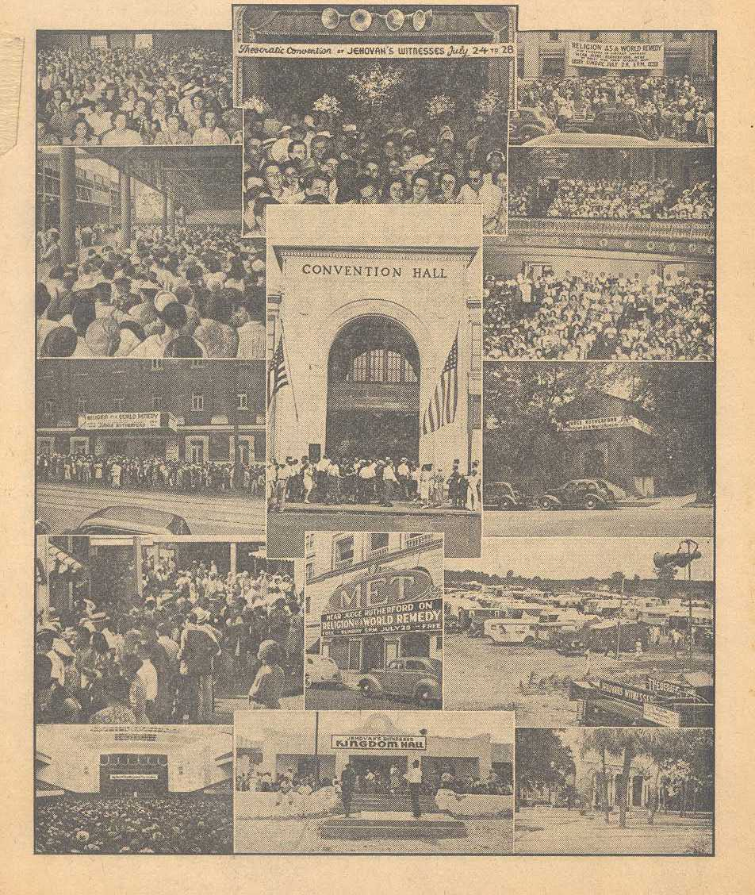
2 ' ' , The MESSENGER . ' \
Putting the Convention Across
ffTTTE'RE going to hold that Theocratic
VV convention, if we have to hold it out under the stars!” There was a fearless look of determination on Judge Rutherford^ face and a tone of defiant resoluteness in his voice as he thus said to the headquarter’s family in Brooklyn, N. Y., one day in June. At the time the contract for.use of Ohio State Fair Grounds at Columbus was still in effect, but the religious, political conspiracy was under way to arbitrarily revoke the duly executed contract under the specious pleas of patriotic motives and avoidance of public disorder and , riot, and indications thereof had manifested themselves to representatives of the Watchtower. To add to this, conditions beyond his cdntrol made it then appear humanly impossible for Judge Rutherford himself to attend any convention in person. There was evident uncertainty about holding that already-advertised first Theocratic convention to be. But Judge Rutherford’s courageous words that June day were decisive. They settled the issue. The headquarters family felt like cheering. Taking this as definite reassurance from the great Theocrat himself, the entire organization took hold of the situation and the arrangement work with grim, renewed determination and boiling zeal and irrepressible joy.
Not unforeseen nor unexpected, a few days later came the self-justifying letter from the Ohio State Fair Grounds management politicians notifying the Watchtower of their one-sided action in canceling the contract, and skillfully concealing the Hierarchical instigators behind such unwarranted covenantbreaking. Little cared they, or their Hierarchical prodders, for the terrific wrench which this gave the convention - preparation machinery . which was already in motion in their own city, or for the keen disappointment which this would and did occasion the businessmen and expectant common people of their own city, or for the thousands of dollars expended by Jehovah’s witnesses for holding, the convention at their city, or for the integrity and fair name of their city and the state of which it was the capital. The gloating Hierarchy may .have thought that by disrupting the pivotal key-city convention, the entire structure of the nation-wide, thirty-two-city convention would cave in. "He that sitteth in the heavens shall
laugh; [Jehovah] shall have them in derision.” (Ps. 2:4) Jehovah’s witnesses on earth, too, held them in derision, and the witnesses are still laughing. Now that the Theocratic convention is a historic event, it appears what a ,.. laughingstock the Hierarchy and American v Legion and other so-called "patriotic” groups have made of themselves. Their chagrin is of their own making. It was Jehovah’s "strange work”! . ,
Undaunted, the convention organization turned to Detroit, scene of the international convention of Jehovah’s witnesses in 1928. In the week just preceding the date scheduled for opening the 1940 convention the contract for use of Convention Hall was signed. It took all the punch out of the blow that the Hierarchy and "patriotic” stooges aimed to give Jehovah’s witnesses by causing Ohio’s governor, Bricker, to ingloriously refuse to honor the petition of 2,042,136 fellow Americans for use of the State Fair Grounds as contracted for.
The enemy had shown much malevolence before the convention, and had the preceding year attempted to break up the convention held in Madison Square Garden, New York, but without success. It was necessary to . be on guard, and there was a measure of suspense. After the first day one felt, ‘Whatever happens now, the convention is an actuality,” Would the enemy try violence on the succeeding days, or the last? The thought was present, but did not disturb the peace or mar the joy of the Lord’s people. Jehovah’s guardian angels were at hand, and His will would be done. Nothing occurred to hinder the peaceful . course of the convention. Once begun, it proceeded smoothly to its consummation and climax. In the following pages the outstanding ' features of the key convention are set forth, beginning with the programs which were relayed to the 17 subsidiary conventions, and concluding with brief accounts of happenings at these various assemblies.
At 4:00 p.m. Wednesday, July 24, 1940, the convention at Detroit was opened by the chairman, and simultaneously all other conventions through, the United States were opened, and Judge Rutherford was introduced to make the opening address to all the conventions.
II Front cover : Convention Hall, the center of nation-wide convention activity. I I I The cover shows many large audiences and auditoriums tied in with the key city. | |
THE MESSENGER
Brooklyn, N. Y., September, 1940
Judge Rutherford Opens Convention
The hand of Jehovah is not shortened.
Neither is His ear heavy, that it cannot hear. He hears the prayers of His people who are diligent to serve Him: “For the eyes of the Lord are over the righteous, and his ears are open unto their prayers; but the face of the Lord is against them that do evil.” —1 Peter 3:12.
Some months ago it appeared to be God’s will that a convention of His consecrated people be held in the United States this year. On three previous years we' had held our convention at Columbus, Ohio, to the real pleasure and profit of the good people of that city. This year the Chamber of Commerce and the convention committee of Columbus sent us a very kind invitation to hold our convention there this year. That invitation was accepted and a contract was signed for the State Fair Grounds’ and every preparation was made for the convention, and that at great expense.
A strong religious organization exercised sufficient influence to bring about a cancellation of the Fair Grounds for the convention. Arrangements had previously been made for a number of other cities to be tied in with the key convention by land wires and in many other places state fair grounds and public halls were contracted for. Many of these have been canceled by reason of pressure brought to bear upon public officials by the great antiChristian. organization. .
Wherever the city or other public officials . have had to do with the permission, as soon as rented generally the contracts have been , canceled. Arrangements for private halls have been made. Manifestly it was the will of Almighty God and His King that we should have a convention this year. Your hearts have been set upon this convention for some time. You have met with many rebuffs along the way. But now we are here, and for this manifestation of God’s loving-kindness we are indeed thankful and give praise to His name that we are here. Therefore I say, the hand of the Lord is not shortened. t
Flag
, When more than two million people petitioned the governor of the State of Ohio to use his power and influence to reinstate the contract for our convention in that city, and when thousands of citizens of Columbus joined in that petition, the governor denied the petition, his assigned reason being that Jehovah’s witnesses declined to salute the flag that protects them. If the governor and other public officials understood the reason why Jehovah’s witnesses take the position they do concerning saluting any flag or heiling any creature, their attitude would be different. We as Christian people, wholly devoted to Almighty God, respect the . flag of the nation where we reside, and we willingly and gladly obey every law for which that flag stands.
The American flag is a, symbol of the nation, and particularly the fundamental law of the nation. That fundamental law guarantees freedom of conscience, freedom of assembly, and freedom of worship, and there is no law on the statute books of any state or any part of the nation commanding anybody to salute a flag outside of the schools. To salute any flag .means that we attribute protection and salvation to what the flag represents. But those who are in power politically decline to stand by the principles for which the flag stands. Our devotion is to Almighty God. We deem it far more important to obey the laws of the land without violating our covenant with Almighty God by saluting any earthly thing than to salute and then immediately violate the law for which- the flag stands, and, above all, to violate God’s1 law, as do those who attempt to force others to salute. .
Knowing that all things work together for good to those who love/1 God and who have been called according to His purpose, no doubt many of you have wondered why such officials should oppose this convention of Christian people. Here we are reminded of the words of Christ Jesus when He stood before the Roman dictator, tox whom. He said: “My kingdom is not of this world.” He said that for the reason that He had previously stated that Satan the Devil is the invisible ruler of this present world. Therefore it was not the proper time for Him to salute the things of this world. The time had not then come for Christ Jesus to exercise His power as King.
Now the Lord Jesus Christ is enthroned as King and about to take over actual possession of all the world. He has nothing in common with the powers now ruling the nations of the earth, which powers are now in great controversies among themselves and the people under great stress. It is to be expected that God would hot have His people hold a convention on the premises held in possession by political and religious rulers who are against Him and against His kingdom. The great religious organization, which I have mentioned, is political and, together with other persons devoted entirely to religion and politics, all such are against Jehovah the Almighty God and against His King. Although Jehovah • says, “The earth is the Lord’s, and the fulness thereof,” public officials and religionists say to Jehovah God’s servants: “You cannot meet on this earth and worship Jehovah God in spirit and in truth without first having our permission.”—Psalm 24:1.
Theocratic
■ This is a Theocratic convention, that is to say, an assembly of persons who love and serve Jehovah God and Christ His King. With us God is first and we are not in harmony with anything that is opposed to Almighty God, whose name alone is Jehovah.
The Theocracy is the government of Almighty God by His beloved Son, Christ Jesus. It is the kingdom of God promised by Him long centuries ago by and through which He will bless all the families of the earth who obey Him and He will grant to such everlasting life. It is the kingdom about which Jesus, instructed His followers to ever pray: “Thy kingdom come. Thy will be done on earth as it is done in heaven.” Since then Christians have earnestly prayed tor the coming of that kingdom, and now it is here. Since Jesus was on earth in the flesh God has been gathering unto himself out from the world a few persons to be witnesses to His name and to His kingdom, atid every faithful follower of Christ Jesus since then has been and is one of Jehovah’s witnesses, not of recent organization, not or-\ , ganized by any man, but selected by Jehovah God, and some of these have been on earth y over the period of six thousand years. Religionists have not learned that fact, although the Scriptures abundantly state that truth. /‘To you who have made a covenant with God to be obedient to His will His kingdom is dearer to your heart than all the things of this life. If we who are in a covenant with Jehovah God willingly break that covenant by disobeying His commandments we suffer everlasting destruction, without any hope of life hereafter. Those persons who persecute us intelligently or ignorantly can do no more than to kill the body. They cannot affect our eternal existence as long as we are obedient to Almighty God. For that reason Jesus gave to His followers this commandment, at Matthew 10:28: ‘Fear not them that can kill the body, but fear God, who is able to destroy both soul _ and body in Gehenna.’ With us it is a matter of life and death. For this reason the apostles told the courts before whom they were haled when they were charged with preaching this gospel of the Kingdom: We will obey God rather than men.’ Such is the rule that we follow this day. Our hope of life is with Christ Jesus in The Theocratic Government, and our hope of life is not with any earthly institution.
Entrenched Enemies
Twelve years ago, in this city the Lord’s people were assembled in convention and at that time a Resolution was unanimously adopted in favor of Jehovah God and His kingdom under Christ and against the Devil and his kingdom. That Resolution appears in Light, Book One, at page 221. It seems fitting and very appropriate that'this convention, therefore, in 1940, would be held in this city and therefore God has so ordered it and we are here. From that day to this the Devil and his cohorts have increased their venomous attacks upon Jehovah’s witnesses, and that without any just cause or excuse. This should be expected. We have not been taken unawares. God has fully advised His servants what would come to pass in these last days, and this advice is'plainly set forth in the Bible. We have no fight with any human creature, whether that person be politician, religionist, or anybody else. No person who loves righteousness has any inclination to fight against us. There are great numbers, thousands of people in this city today and throughout America, whose hearts go out to Jehovah’s witnesses because of their bold and immovable stand for God and for righteousness, and from which they refuse to be moved. Who then are our enemies leading in the fight against us? The answer to that question is found in Ephesians the sixth chapter, to wit: “We wrestle not against, flesh and blood, but against princi-
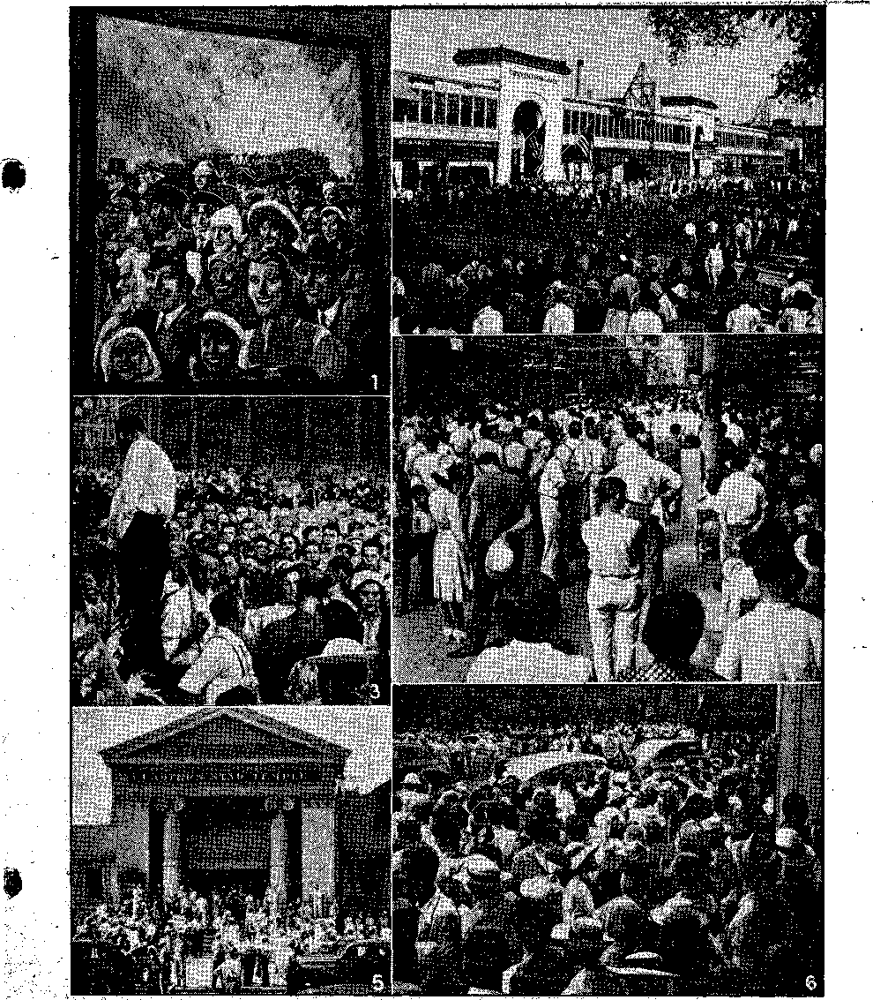
1. Hailing Theocracy. (Painting) 2-6. Crowds in and around Detroit convention halls.
palities, against powers, against the rulers of the darkness of this world, against spiritual wickedness in high places.” We know, there. fore, that Satan is-our chief enemy because he is God’s enemy, the enemy of The TheoCRATic Government. We know that a host of demons with him are our enemies; and we . know that the ecclesiastical or spiritual rulers named in this text, in high places on earth, . are dead against all who are for The Theo-cihVffo Government. This we have known for Some time and we are not at all surprised about what has come to pass.
Recently The Watchiower published a series . of articles setting forth the Scriptural proof that these unseen principalities and powers, . the demons, would overrun the world at this very time. All the evidence; shows that we 1 have a proper understanding of these prophecies. If , everything had continued with calmness Up to now, necessarily we would have concluded that we did not have the proper understanding of the Scriptures. The Lord has . shown us that we have a correct understanding, and now we sec, as the Scriptures declare, the whole world under the sinister influence and power of the demons. We know, therefore, that every part of the political institu- , tions and the religious institutions, working together against The Theocratic Govern-< me^t, are necessarily against us. We are not sdfprised. In this connection we are reminded aghin of the declaration of the Scriptures: ‘Through much tribulation shall ye enter the Kingdom.’ The Kingdom is here, the King is enthroned. Armageddon is just ahead. The glorious reign of Christ that shall bring blessings to the world will immediately follow. Therefore the great climax has been reached. Tribulation has fallen upon, those who stand by the Lord. And why? God has permitted it for two purposes: First, to allow the visible part of Satan’s organization to don their garments of identification and let it be known that they are against The Theocratic Gov-E^NMiNT. There was an apt illustration of this when God manifested II is particular fa-tor on Jehu, who represented Christ Jesus. There Tie caused all the religionists to put on their garments of identification; and the same thing He is doing today; permitting all who afe Opposed to The Theocratic Government to take their stand against The Theocracy, God’s kingdom, and in favor of this world . that is certain to go down. This is a time when Jesus is separating the people, permitting those who are opposed to Him and His kingdom to take one side, and those who are with Him to take the other ,side. The division is going on, and that rapidly. A second reason why tribulation has come is to afford opportunity for those who are in a covenant with God to prove their integrity to Him; and you are having this opportunity, and so am I. This God’s consecrated people are determined to do at any cost. Tribulation does not deter us or make us go about with droopy eyes or droopy hands.
Therefore the appropriateness of the apostle’s words as written in the Bible: “We glory in tribulations also: knowing that tribulation worketh patience; and patience, experience; and experience, hope; and hope maketh not ashamed; because the love of God is shed abroad in our hearts by the holy [spirit], which is given unto us.” (Romans 5:3-5) Thank God for that message written to His people, written long ago to bring comfort and satisfaction to their hearts at this time. We feed upon tribulation because we take that as one of the evidences that God is dealing with us as sons and not as bastards.
Our hope is not in things of this world, but our hope is centered wholly in The Theocratic Government. Therefore we anticipate tribulation; and it has come! Exactly in due time. Again, strictly in harmony with what experi- ‘ enees you have been having recently, we find the appropriateness of the words by Paul written at Colossians, to wit: “Who now rejoice in my sufferings for you, and fill up that which is behind of the afflictions of Christ in my flesh for his body’s Sake, which.is the church.” What a blessed privilege, therefore, to stand today as the targets of the enemy and receive their darts, unflinching and unashamed! And by God’s grace we will keep on doing it.
The very day that Italy stabbed France in the back, with the approval of Pacelli, and turned that people over to Fascism, that very day cruel persecution broke out in this land against God’s consecrated people as a camouflage to hide the real wickedness of the real enemies of the American government. An organization under the command of the Papacy released for publication a paper on the same day calling upon public officers throughout the United States to employ summary proceedings against all persons who are subversive. Immediately, like a flash from the wares, the persecution of Jehovah’s witnesses in Tex- ..
. aS, Maine, South Dakota and many other states broke out, not against Fascism and Nazism, but all against Jehovah’S witnesses, who are doing nothing but to advertise the great Theocracy of Jehovah God under Christ Jesus the King. Only the supermind of Satan could have timed the action on both sides of the earth at the same hour and caused,his servants to perform these unlawful deeds against those who are advertising The Theocratic Government.
Doubtless the practitioners of demonism hoped and expected to so discourage Jehovah’s witnesses by their cruel persecution that no convention could be held at all in the United States. God could have prevented that persecution, but He has permitted it in order to give the enemy an opportunity to identify themselves, and an opportunity to His people to show their full faith and confidence in Him. Therefore amidst great tribulation, trials and persecution you have trekked your way from every part of the land to this city that you might here meet together to worship God in spirit and in truth, and in many other cities in the United States other conventions are tied together by private wires with this one, that all of us may raise our voices and heart devotion to the great Theocrat and His King.
Our position with reference to saluting hags and heiling men is exactly in harmony with God’S commandment, and in obedience to His Word, and exactly in harmony with the lead of Christ Jesus. God’s Commandment to His covenant people is this: ‘Thou shalt know no other gods but me.’ That means that we must be for Him and against demonism. Again, He says, ‘Thou shalt not make unto thee any graven image of anything that' is in heaven above, or in the earth beneath, or that is under the earth; thou shalt not bow down thyself to them nor serve them; for I am the Lord thy God.’ When the Lord Jesus had begun His ministry the Devil sought to entrap Hina by trying to induce Jesus to bow down to Satan and to salute Satan. Jesus well knowing that to give obeisance to any creature would bring destruction upon himself, and, above all, because of His love and complete devotion to Jehovah God, He replied to the 1 Devil in these words: “Get thee hence, Satan; for it is written, Thou shalt worship the Lord thy God, and him only shalt thou serve.” Thus /.' the Lord Jesus set the rule that every creature who survives and receives God’s approval must follow.
And now in this hour of peril Satan subtly endeavors to entrap those who are fully devoted to God and His King by inducing them to bow down to and attribute salvation to earthly things. Satan well knows that that would mean our destruction. We well know it would mean our destruction. Therefore we Cannot yield to earthly powers, and we will not, even though it cost us the life we now possess on earth. Would the governor of the great state of Ohio, who poses before the people of America as one who stands for the fundamental law and for righteousness, would he and other public officials desire us to bring about our own complete destruction by going through the formality of giving obeisance to earthly things contrary to God’s law? I am sure that if they understood the real position of devoted Christians they would not want to take this responsibility upon their heads. Because of our full devotion to Th^ Theocracy enemies may unlawfully shed our blood, but, if so, our blood will be upon those who induce and who perform such unlawful acts.
From that day, from Jesus’ time, to this every person’ who has boldly declared himself for Jehovah God and Christ His King has been reproached and persecuted by the Devil and by those persons who yield to the influence of demons/The faithful apostles of Christ Jesus were subjected to all manner of persecution and were reproached, and were denounced as criminals, because of their devotion to Almighty God. Therefore the apostle quotes the words of Jesus, to wit: ‘The reproaches that reproached thee have fallen upon me.’ All during the life of the apostles they were reproached because they proclaimed the kingdom of God under Christ. We should expect when the King comes that the persecution will be greater because the hour draws near for the final conflict between The Theocracy and all opposers, and Satan knows his end has come. '
Amidst great persecution and opposition from all the nations of the earth today hating God and hating His servants for His name’s sake, we rejoice to be on the side of God and His King Christ Jesus, to be made of no* reputation among men, to be despised by all nations for His name’s sake, and therefore, in the language of the text which the Lord has so graciously indicated we should use for this year, ‘We trust wholly in thee, and my heart shall greatly rejoice in thy salvation.’ We welcome this opportunity Of getting together in this convention. We give ■ praise to Almighty God, and, since the declaration of war against the Devil and his associates, made in this city twelve years ago, we expect that warfare to continue with increased vigor until the Lord himself exercises His supreme power and ends all tribulation, and establishes righteousness and peace, and grants life everlasting to those that love and obey Him.
So, then, we have come here as messengers of peace. We have come here to bring a message of peace to the people of this city who , are of good will and .those throughout the ' earth,who wish to hear, and those who do not wish the people to hear this message of peace, _ who would like to keep the ears of the people
dull to the gracious things that God has in reservation for them, the men on earth who are thus bitterly opposed and fighting against Jehovah’s witnesses, are the religious and political leaders who, desire to have the whole thing for themselves—all against God and all against His kingdom. But we delight to be on the other side, on God’s side and on the side of righteousness. .
May this convention bring praise to JehtP , vah’s name. We count not our lives dear unto us, that we may have a part in the advertising of the Theocratic Government, because that is our business. We are pilgrims and strangers in a strange land, holding aloft the banner of Jehovah and His King. That banner alone we will salute. . .
35,000 in Detroit on Saturday
: ■ ■ *
THE next big feature, of the convention was Judge Rutherford’s Saturday talk on ■the subject “Times and Seasons”. All available space in the convention halls and the Eastern Star Temple was' taken. Thousands more in the trailer camp were able to hear the address by means of direct wire connection. All had eagerly awaited this session of the convention. Before beginning his address Judge Rutherford made the following statement :
The manager of the convention informs me that many reporters for the public press are here and have requested that I give them an interview. Past experiences show that the reporters gather the in- ■ formation, which the paper straightway refuses to print and instead prints many falsehoods against us. If the reporters will bring to me a written and . signed statement by the editor in charge of their respective papers, which statement promises the publication of the answers I give in answer to their questions, I will answer every question that they propound and grant an interview for this purpose. Otherwise it would be too bad to take up the time of the reporters to speak with them. .
<Judge Rutherford’s address of Saturday afternoon was another of the four sessions of the convention carried to all convention cities in the United States. In this impressive discourse special consideration was given to Paul’s words in 1 Thessalonians 5, so evidently dealing with our day. A complete report of this address appears in the new booklet Conspiracy Against Democracy. Here only a few excerpts are made: '
Jehovah God directed his prophet to. write: “The end shall be at the time appointed.” (Daniel 11: 27) Necessarily that means that the end is definitely fixed and shall not be delayed. ... It is the time when “this gospel of the kingdom” has been preached as a witness to the nations of earth and that preaching is completed. Since the year 1922 God’s covenant people have been busily engaged in the work of making known the kingdom of God. In this they have had much tribulation and far greater joy. Twelve years ago in this city a resolution was adopted by a convention of the people of the Lord, which was a declaration of war against Satan’s wicked rule. It was a proclamation of. allegiance to Jehovah God and against the unrighteous rule by demons and their agencies. Since then Jehovah has gradually unfolded to the vision of his people the meaning of many prophecies, which revelation has brought to them great comfort and joy. All the evidence now strongly points to the fact that Armageddon is very near and that soon . we may witness Satan’s defeat and the complete vindication of Jehovah’s name. That will mean the beginning of endless .joy, peace and life to all creation that love righteousness and hate iniquity. In these days of darkness upon earthly rulers and , gross darkness upon the credulous people that hold to demonism there is great lighf shining into the mind and heart of each one of those who are fully devoted to God and to The Theocratic Government. This light of Jehovah shining in the face of the great King of The Theocracy, Christ ' Jesus, is reflected to the minds of those who are his true followers.
Looking down to this very time, the apostle Paul, inspired by the spirit of God, wrote for the benefit of faithful Christians now on the earth these words: ‘Of the times and seasons, brethren,
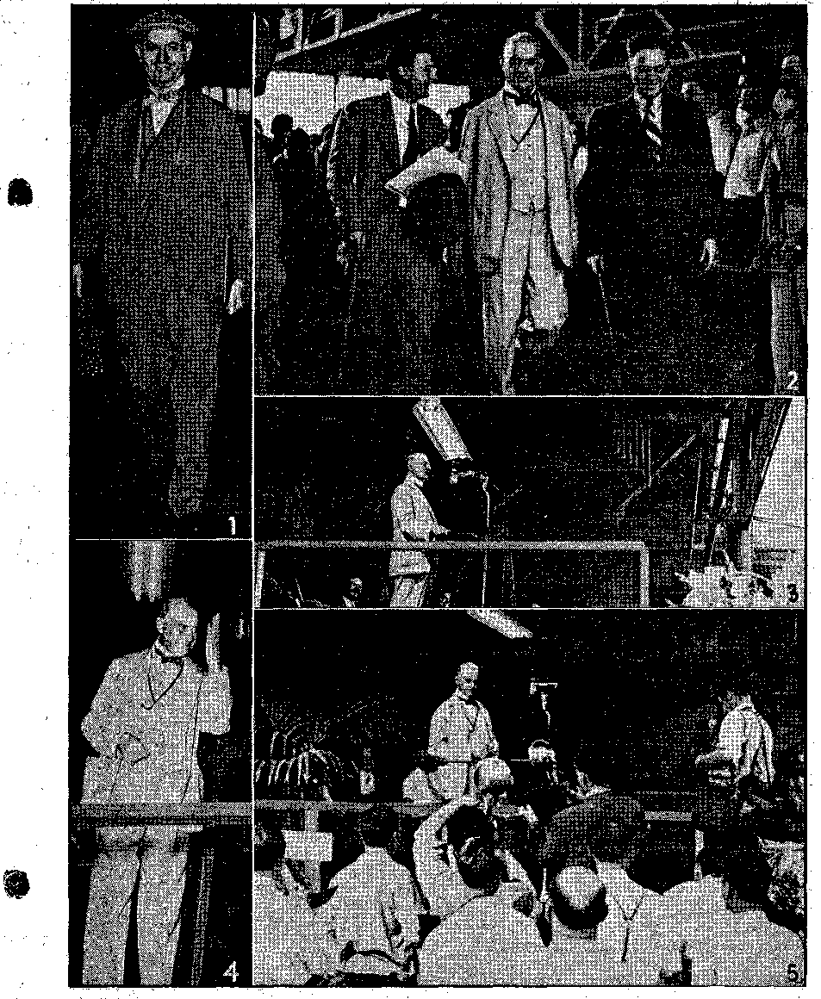
L Judge Rutherford. 2. With convention servant and Society’s counsel. 3. “This is the most joyful convention I ever attended.” 4. Greeting all whom he could see. 5. All right, boys!
ye have no need that I write unto you, because ye are not in the darkness, but ye are the children - of the light.’ .
He dwelt at length upon “the sign” to appear in the near future and which would ip- dicate the battle of Armageddon as due to begin.
Toward the conclusion of this speech, and to the immense delight of a rapt audience which hung on his every word, Judge Rutherford sprang a big surprise by introducing a new book, Religion, of which 15,000 autographed copies were placed the first hour and many more the next day. Here Judge Rutherford said:
’, “The Lord has graciously provided another instrument for the use of His people in this final campaign. He has made it clear to those who love Him that demonism and Christianity are exactly opposed one to the other. De. mon religion proceeds from the Devil; Christianity, by and through Christ Jesus. Millions of people of good will now in the earth desire to learn of this difference and to take the right course. God has made such a provision. He has given to us another book. [Great ap-: plause] The book, Religion, [continued applause] contains the full information. Obtain your copy and read it quickly and then get it to others quickly, that they may learn of God’s provision for their salvation and the salvation of all who love and serve him.” [Applause]
After a pause, Judge Rutherford continued: “At all times be on the alert, be watchful. Watch for the sign for the beginning of Armageddon and put your confidence wholly in the Lord. That sign is certain to be made manifest soon, and clearly it will be, When they say peace and safety,’ then sudden destruction shall immediately begin. When the sign for Armageddon clearly appears, may it be that , then this promise of Jehovah will be fulfilled, to wit, ‘Come, my people, enter thou into thy chambers, and shut thy doors about thee; hide thyself as it were for a little moment, until the indignation be overpast.’
“If this be the last convention to be held by God’s faithful people prior to Armageddon, then we will look forward with unbounded joy to that convention that shall never end. [Great applause] Therefore, in the language of the apostle, ‘Rejoice for evermore,’ and give praise to Jehovah God.” .
Judge Rutherford continued, saying that he wished to offer to the convention the Message of Hope, to be distributed far and wide to the millions of people of good will in all the earth. (It will be the privilege of Jelio-vah’s witnesses to do more than merely dis- z . tribute it in printed form, as it has also been recorded for phonographic reproduction and will be used extensively in the door-to-door witnessing.)
Immediately after this inspiring talk, accepted as another timely blessing from Jehovah, and the unanimous acceptance of the Message of Hope, thousands of convention-ers were soon sOen with the new book Religion with its brilliant green cover, eagerly glancing through it. They were looking forward to the enjoyment qf reading it and the privilege of placing it with the people of good will. They recognized that this was truly another instrument in the hands of Jehovah’s witnesses for the advancement of the Kingdom interests. This session of the convention was one never to be forgotten.
High Point of the Convention
Reached in the Public Address of Sunday, July 28
Judge Rutherford’s address of Sunday, “Religion as a World Remedy—The Evidence in Support Thereof,” was the principal feature of the convention—its grand climax. It was a bold examination, in the light of the Scriptures, of religion and its claims to efficacy as a world remedy. The “evidence in support thereof” was shown to be wanting, and religion contrasted with Christianity, the real remedy. He said, in part:
Political and commercial men of high standing urge upon the nations “more' religion” as a world remedy. . . . The president of the United States in sending his personal ambassador to the Vatican said to the pope: ‘Your Holiness: It is well that we encourage a closer association between those in religion and those in government, who have a common purpose.’ If religion is the remedy, then all honest persons should lay hold upon that remedy. If the evidence does not support the claim that religion is the remedy, then an adequate remedy should be eagerly sought. ...
Jehovah’s witnesses have no fight with any person because of his religious belief. Many Jews, Catholics, and so-called “Protestants” have been unwittingly ensnared by religion. It is the duty and privilege of every Christian to aid such to see the truth in order that they may devote themselves to God and His kingdom. The only purpose of calling attention to the difference between religion and Christianity is to aid men to see that God’s law is the only safe guide and obedience to God is man’s only protection. ; . .
That which is called “the Christian religion” is not Christian. It'is a religious practice carried on under the name of Christ, but which is in defiance of the law of Almighty God, and which gives honor to creatures rather than to Almighty God, and which deceives millions of sincere persons. As a pointed example I cite the words of the venerable Cardinal Gibbons, who after stating the doctrine - of “Purgatory” then adds these words: “This interpretation is not mine. It is the unanimous voice of the fathers of Christendom”; that is, entirely traditional and not supported by the Word of God. ; (See The Faith of Our Fathers, page 208.) After the days of the apostles a sincere body of men organized themselves as Christians. Thereafter subtly Satan, the chief of demons, induced men in that organization to advancez and teach their views contrary to the Bible, and thereby substituted religion for Christianity. Thereafter they taught the tradi-' tions of men. That has been dubbed the “Christian organization”, although entirely contrary to God’s Word. ...
-There are honest and sincere m§n who have been priests of the Roman Catholic Church, many of whom have recently separated themselves from that religious organization because of the Hierarchy’s political activities which are called “Catholic Action”. There are millions of sincere and honest Catholic people held in subjection to the Hierarchy because of fear of creatures. ... ,
The Hierarchy are the real movers of compulsory flag-saluting and honoring creatures. Because the Christians in Germany refused to yield to such, religious ceremonies thousands of them have been incarcerated in prison and many of them killed...
The Supreme Court in the Gobitis case decided only that school boards might enforce rules compelling children to salute the flag, and that against their conscientious objection. The court made no attempt to decide that adults must salute the flag. No such issue was before the court. There is no law in America that compels adults to salute the flag. But the Hierarchy and allies, in order to browbeat the people, attempt to compel conscientious . Christians, contrary to the law of the land, to violate God’s law. Whenever the issue by law is raised compelling adults to salute the flag, that issue will be properly met before the courts. . .
The “great multitude” that shall survive Arma-geddon-and fill the earth with a righteous race must now hasten to put themselves on the side of The Theocracy and its King. The rulers of the earth have now forgotten God and turned to religion and are certain to go down in a very short time. Only the “great multitude” will survive, and will jive forever on the earth. Then shall the earth become a glorious and blessed place in which to live. Turn your faces and your heart devotion now to the Almighty God and to his King, Christ Jesus, and live. (
The complete report of the discourse here touched upon appears in the new booklet entitled Conspiracy Against Democracy.
At the conclusion of Judge Rutherford’s address, a World War veteran asked leave to present a resolution for adoption by the convention. He said:
I desire to present a Resolution to this great convention. Much has been said about the American Legion and .Veterans of Foreign Wars and their attitude against this Christian convention. I was an officer in the World War and commanded a company at the front in France; I am a Christian now, and I ask you to have this resolution read to the convention, and I ask the convention to unanimously adopt it and send it out as their message to the people. .
The chairman accepted the resolution and said: . . . '
Max Freschel, who was born a Jew, but who is a Christian by adoption, and .who has had much experience with the /Nazis in Europe, will appreciate reading this statement to the convention. I call upon him to do so.
Max Freschel then read the resolution reviewing events'leading up to arrangements for the convention, opposition, persecution and mobbing of. Jehovah’s witnesses by priests, American Legionnaires, lawless officers of the law and others. It pointed out the reason for the cancellation of the contract for the use of the State Fair Grounds in Columbus, Ohio, and the switching as the key city from Columbus, to Detroit. It mentioned the opposition encountered in Detroit by the same lawless elements, and the hostile attitude of many of the newspapers. The resolution also mentioned attacks made upon individual witnesses in their work by priests and their supporters, and showed from the Scriptures the responsibility all these, opposers of righteousness bear before Jehovah God. In conclusion the resolution said: *
To Jlis servants the Lord said concerning the present time: “Ye shall be hated of all nations for my name’s sake.” (Matthew 24:9) We delight to declare ourselves wholly and completely devoted to the great Theocratic Government, the Kingdom of Jehovah God by His King, Christ Jesus,
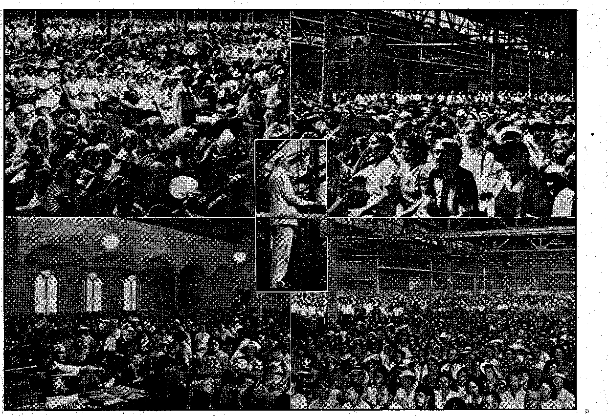
Judge Rutherford addresses Theocratic convention. Showing only four of the seven packed-out halls used in Detroit.
the world’s rightful ruler, and we welcome the 7 opportunity of bearing the reproach that has been heaped upon the Lord and upon His holy name.
, ' We call upon all order-loving people throughout the land to take notice of the fact that the king, dom of heaven is at hand and that their only means of life is to flee from the dominating, wicked in-•" , fluence now being exercised by ’the lawless and flee
to the Theocratic rule of Christ Jesus. To all such order-loving people we extend our kindest M wishes, be they Catholic, Protestant, Jew, bond or free; There is but one means of salvation, and that is by Jehovah God through Christ Jesus our Lord. The resolution was adopted by a thunderous “Aye” from 45,000 in attendance at De. troit and tens of thousands simultaneously as. sembled in convention halls in seventeen other American cities tied in with Detroit.
Judge Rutherford then rose and made' the following ,
EXTEMPORANEOUS REMARKS
[These remarks, which went out over the chain of conventions, were greatly appreciated everywhere.] - “From all over England, Scotland, and even Ireland, these cablegrams have just been received. I shall not take time to read them. I will ask the chairman to do that later. I just wanted to take time for a few closing words to . this convention, so far as .1 am concerned.
“Lying flat on my back under treatment by two doctors, and when the fight was on in Co" lumbus to have the convention, and knowing that the Catholic bishop was leading the fight against us, I dictated a letter and asked it to be sent to him, inviting him to share the plat, form with me and tell the people wherein religion is a world' remedy. I presume the distinguished gentleman could not find any argu-. merit and thought he better keep still. Therefore I had to give the argument for both sides ' today.
■ “And now, brethren, remember what the apostle wrote: ‘Through much tribulation shall, we enter the kingdom.’ You havQ come here through much tribulation (and this heat has made you have some more tribulation), but I am sure that this is the most joyful company of people that have ever been assembled on this earth at one place and one time.
’Bp “For thirty-three years I have been attend' ' ing conventions, but without hesitation I can
say that this is the most joyful convention I ever attended or ever anticipated attending ’ on this earth. You are going back to the field
, to have some inore fights; but you love a fight,
' and you feed fat upon it. I know you won’t be discouraged, so it is not necessary to say ‘Be of good courage’. You have been of good courage all the time. '
“But when the enemy attack you, and when they say, ‘Will you salute the flag? I will make you salute the flag.’ ‘Well, my good sir, who appointed you to enforce that? There is no law in America compelling men to salute flags. Are you the law? Have you taken the law into your own hands ? It seems to me that you are the lawless one. You. had better go home and think about that a-while, and take advice from the Lord, and not from the Catholic priest.’
“There is no use to get angry and argue with them.-1 don’t know whether this is true or not, but I saw in the paper yesterday it was reported that someone said that ‘No, he would not salute that rag’. That is a very unfortunate statement. The flag is not a rag. The flag is a symbol of a government, the principles of which were established on righteousness by men who loved God. And it now appears that the only people in America that really love those principles, who really represent the flag and who are determined to stand by those principles, are Jehovah’s witnesses and their companions.
“These poor roosters that wear their clothes wrong side in front, who are terribly chagrined because the truth is turning the people away from them, must come to know that they are not running the earth. They may run it for a while, but not for lorig. The poor deluded ones who have been seized by hysteria, because of the influence of demons unseen and demons seen, are really to be pitied. We do pity them. We hold nothing against any of them. We know that these things are but an evidence of the fact that Satan’s organization is tottering to a complete fall.
“So rejoice. Lift up your heads and rejoice. Today you see the Scriptures fulfilled, when "the armies of the Devil are surrounding Jerusalem, that is, God’s organization. Therefore, says the Lord Jesus: ‘Look up, lift up your heads and rejoice; for your deliverance draw-eth nigh,’ and go back to the field more determined than ever to fight until the Lord says it is done.”
"Kingdom News”
As a still further surprise and final treat for the Theocratic conventioners, there was announced at the conclusion of the speech on “Religion as a World Remedy” the release to all of a new issue of Kingdom News, issue
No. 6, bearing the large-headline (in green) "Time of Darkness—Isa. 60: 2”, and detailing the hysteria of mob violence and other wicked lawlessness against Jehovah’s witnesses now convulsing the United States, and the Scriptural significance thereof. These were distributed at all exits free to the vast throngs as they streamed out. Unfortunately, great numbers of the public were unable to gain admittance to Convention Hall on Sunday, even all standing room being occupied. Hence, during the lecture, rather than turn these disappointed thousands away empty-handed and unrewarded, Kingdom News No, 6 was distributed to them. All together, 100,000 were
distributed to those inside as well as those outside Convention Hall, , at this public address. '
A miniature mountain of bundles of Kingdom News No. 6, amounting to 2,026,000 copies, was on hand for disposal Sunday. The witnesses rejoiced exceedingly at getting this timely and further provision of the Lord for the fight to which they were now returning. Not a bundle of Kingdom News was left. It was marvelous to observe that immense quantity completely taken up by the conventioners, for distribution on their way back to their posts of service and in their home territories on return. .
Thursday Afternoon
THE Thursday afternoon session of the convention was anqther of those that were carried to all the convention cities in the United States. A change in the program gave the platform first to Wm. P. Heath, who addressed the convention on the subject “Ameri-, ea’s Friends”. He said, in part:
. . A consideration of the Scriptural prophecies and the supporting facts will disclose not only the real friends of the American people but also their enemies.' The great Theocrat Jehovah and His King Christ Jesus are the perfect friends of distressed humanity. It is recorded that ‘God so loved the world that He sent His only begotten Son’ - Jesus unto it. No Christian can deny'that God’s love and friendship are boundless. This friendship is. limited by the above text to those who believe
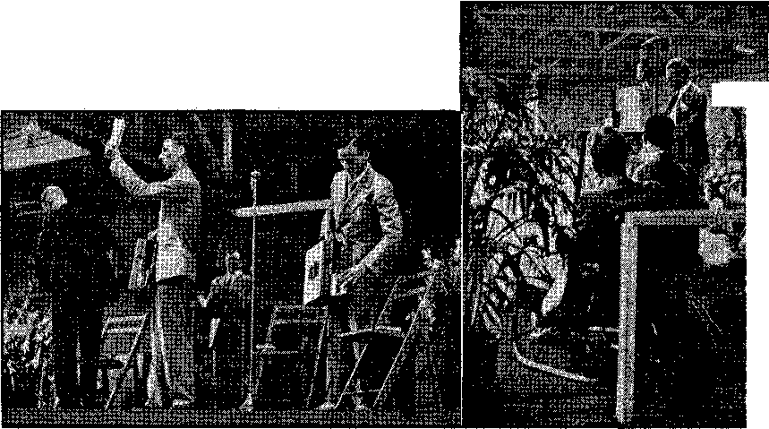
Demonstrating
addressing conventions
the new phonograph
Wm. P. Heath
4
Session — A Surprise
on Christ Jesus as the Lord’s provided Savior. In what category, then, must those be found who ,hate Jesus’ brethren and persecute them for Jehovah’s name’s sake? Are the organizations today, such as the Roman Catholic Hierarchy allied with the American Legion, and which organizations claim to be protecting the American people from Jehovah’s witnesses, actually doing our country a favor? \ Is it a favor to the Stars and Stripes to induce its citizens to fight against Jehovah’s name and His people? Is it an act of friendship to cause one to be executed? Is it an act of love to persuade mobs, poisoned by lies, to set upon the faithful servants of the Lord, when such crimes will be punished by death to the perpetrators in the day Jehovah avenges His people? .
The speaker ^answered these questions with abundant Scriptural and modern corroborative support based upon fulfillment of pro, phetic truth. The full report of the talk is given elsewhere. .
Phonographs ,
Following this talk, and - as announced on the program, came a "Demonstration”, when N. II, Knorr, convention servant, introduced a real surprise, a new portable phonograph designed for doorstep witnessing and made to play in a vertical position. It had a number of new' features, each of which as mentioned by the speaker, and simultaneously demonstrated at each convention city in the United States, was hailed with joy and applause by the conventioners., . Trained demonstrators in each, hall stood on tables and showed the operation "of the < new phonograph. This was one of the big hits of the convention.
Thirty new phonographs, demonstrated dur-' ing the convention, were eagerly taken by the witnesses so fortunate as to ask for them first. . They made liberal contributions to cover the initial expense incurred in perfecting the new phonograph. Had they been available, five hundred of the new phonographs could have been placed at the convention!
The phonograph has" been a powerful instrument in the hands of the Lord’s people in the proclamation of the Theocratic Government. Several months ago a few of the brethren developed a new principle to be used in the phonograph. Brother Rutherford saw the value of these principles and immediately* arranged for 50 models to be ready for this Theocratic Convention. This new vertical-type phonograph is a splendid instrument for the door-to-door work, the doorstep setup, and back-calls. One ean operate the phonograph vertically, as you will see, or it can be set on a table in a horizontal position and work just as well.
The Pioneer Meeting .
"Pioneer” is the term applied to that division of the publishers of Jehovah’s Theocratic .Government who devote their entire time to , the work, spending a minimum of 150 hours a month directly in field activities, bearing' the message-from house to house and making return visits upon the interested, and using , both the printed message and recorded speech and other facilities provided by the Watch
tower Society. To this end the Society makes special provision in their behalf for their continued maintenance in Ahis full-time service. To aid as many pioneers as possible to attend the Theocratic convention, the Society made special arrangements for them at great cost. It was very gratifying that thus the vast majority of over 3,000 pioneers were enabled ,to put in appearance at the eighteen convention points and participate in its various services and activities. >
The pioneer meeting, 3 p.m. Thursday, witnessed all pioneers present assembled in the main auditorium in front of the speakers’ platform, about 1,500 at .Detroit alone, but the meeting was attended also by others of the convention. It dealt specially with the privileges and' problems of the full-time workers. Among them were many who had recently entered the service, as well as quite a few who i had in recent months suffered at the hands of x mobs. The meeting was conducted by T. J. Sullivan, who said, in part:
Jesus said, “Seek ye first the kingdom of God, and his righteousness”—that is, your first consideration must be the righteous requirements of the Kingdom. Look to your “taskmaster” (righteous- ' ness) and then, the Lord ,assures, “all these things shall be added unto you.” That is final. I wouldn’t care if a million people came to me and tried to convince me that because they failed to get the wherewithal to keep going the condition disproves the, Lord’s statement. I would not believe them. The question is, Whom do we believe: the Lord or some creature? The Lord’s wofd is true. The failure is with the creature, not with the Creator. He will fulfill His part if we do our part. The thing to do is to take the Lord at His word. The element of faith enters into this. ...
- There are some in the pioneer service who are continually dwelling on ho.w they are going to eat and how they are to be clothed. They go into the service with their minds full of these things and generally do not make a success of the work because they are not seeking first the Kingdom. Their mind is on the wrong thing—themselves and their needs—rather than the Kingdom and its requirements ; and then the Lord is blamed for their failure.
Don’t misunderstand this. I am not oblivious of the hardships the pioneers endure or the difficulties you have to contend with. I know Brother Rutherford spends much tim'e considering and planning ways and means of assisting the pioneers, and as the Lord directs and leads he makes such provisions as he can. My point is that the Lord will fulfill His promise if we do our part. ...
During the past five months we have enrolled approximately 1,100 new pioneers. Many of you who are here today, rejoicing as never before, are
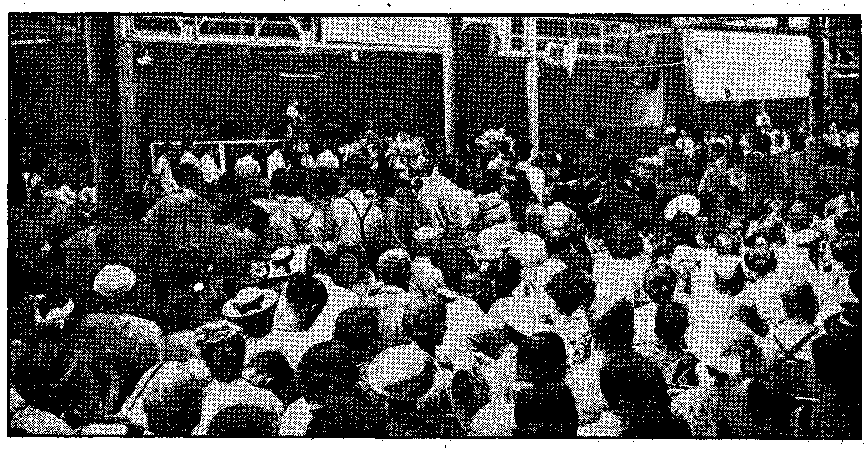
Pioneer meeting a joy to everyone
undoubtedly part of that 1,100- Yours is a blessed . lot. You are storing treasures in heaven, which no one can take away from you. ...
During the course of the convention 220 individuals requested pioneer applications, of which 83 were filled out and turned in at the convention. . z
Model Service Meeting
Service meetings, on the average one evening each week, are a regular feature of all organized companies of Jehovah's, .witnesses throughout the earth. As an illustration of how a company service meeting could be made most interesting and helpful to the Theocratic ambassadors, a Model Service meeting was conducted from the convention platform on Thursday evening, July 25. Four brethren served on the program, one acting as would a company servant, another as the secretary, a third as back-call servant, and the fourth as stockkeeper. ,
In the course of the sample meeting it was pointed out that not merely those who hold official positions in the company1 are to be used on programs of service meetings, but all capable brethren should be used from time to time. .
In the , model meeting under consideration the importance of all company publishers' attending service meetings was stressed, since at such meetings information and instruction are given that are essential to each one of the remnant and those of the “great multitude” who have been brought into association with the remnant.
• Now that copies of the official service publication, the Informant, are sent only to servants of the companies, it is all the more necessary for the publishers to be in .attendance at all the’service meetings, where the Informant is studied, analyzed and discussed for the proper equipment of each and every worker.
It was pointed out that field service covers five distinct lines of activity: house-to-house witnessing with phonographs, magazine street-corner work, back-call work, information marches, and sound-cars, tn addition, and as an extension of the back-call work, there are model studies to be conducted in the homes of the interested.
Attention was called to the following instruction issued by the Society:
‘When groups of lawless persons or public officials acting unlawfully cause, a stop of the publishing work and injure the publishers or their property, do this promptly:
Write a clear, brief, but comprehensive account of all the facts. As far as- possible name accurately- % each opposer who takes a leading part. Give his official position, such as mayor, chief of police, or other. State whether he is a member of The American Legion or other veterans’ organization (naming it accurately)., and what position, he holdsj therein., . Name each clergyman participating, giving name of church denomination. Let all such names be obtained as accurately and as promptly as possible under the circumstances.
' A competent individual in the local company or zone can sign this statement as his own and acknowledge it as a true'statement before a notary public. Typewrite the statement, making eight readable copies. Send the original to Francis Biddle, Solicitor General of the United States, Department of Justice, Washington, D. C. Send a copy to each of the following and retain one copy for your file:
American Civil Liberties Union, 31 Union Square, West, New York, N. Y. ' ’ .
Governor of the State where event occurs; attorney general of that State; prosecuting attorney of the county where acts occur; editor of that county’s largest newspaper; Society’s Brooklyn office, legal desk.
Another point that the workers were counseled to bear in mind was that when accosted by an officer and.asked, “What are you doing?” the testimony card is immediately to be produced, as that contains the worker’s credentials. If the officer refuses to read it, then read it to him. So doing, the statement on the card will, in ch.se of arrest, become part of the court record, setting forth exactly what you were doing and why.
Mention was made in the Model Service meeting of the fa<?t that the persecution of Jehovah’s witnesses by the American Legion and the Hierarchy in r,ecent months has had -the effect of forcing many of Jehovah’s witnesses and companions out of secular employment. Instead of sitting down and bemoaning their fate, these immediately made application for pioneer service, determining from henceforth to find employment in The Theocracy, where neither man nor devil can force them out.
Another Model Meeting
A model Watchtower study, Saturday night from 8 to 9, was another delightful feature of the convention. It stressed the necessity of preparation on the part of study conductor and study group and demonstrated the method carried on at the Society’s headquarters, in Brooklyn, New York. In order to make the answers audible to that vast convention of s 35,000, including those at “Jehovah Village”, twelve miles a way,z there were only a,limited® number invited to participate directly in the model study on the platform, and who an-/ swered the questions on the current Watch-■ tower article through microphones. At times the entire assembly was called upon to answer >a question in unison.' To the question,
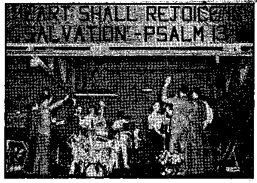
Model Watchtower study conducted from platform “What will Jehovah’s enemies then say?” a basso-profundo voice answered, “They shall say ‘Peace and safety’.” “And what will then happen?” addressing the question to the convention, which answered with a thunderous roar, “Then sudden destruction cometh upon them, . . . and they shall not escape!”—Quot-ing 1 Thessalonians 5:3.
Hurdling Obstacles
If you visited Convention Hall when the convention committee did when making arrangements, or if you visited it just two days after the close of this assembly, you would behold just a sprawling series of five large, low-roofed halls with sky-lighting, adjacent one to another, and with broad passageways or door openings and immense floor space. A tour of the vast barnlike structure, from the Cass Avenue entrances to the Woodward Avenue entrance, just two days after the witnesses got iii to do construction work, pointedly showed, to wit, that Jehovah has on earth a practical people of many capabilities, able to carry on without aid of the Devil’s commercial organization, thoroughly able to act as organizers or to be organized, and to transform a messy situation into a comfortable and adequately provided convention location. As to this and other convention arrangements in other parts of the city, so thorough a job was done of systematizing all preparatory activities that the work went forward with the required efficiency and completely overrode all the obstacles and disconcerting delays and hold-ups that the enemy had willfully brought about. Not surprising, therefore, that in a few days’ time the regular company of witnesses at Detroit secured 17,000

Calling for room
assignments
could be had; and
Room assignment department
could be had; and ofher auditoriums being denied them, the final arrangements were for the use of Convention Hall. It. was supposed to seat, in its five separate (but connected)
accommodations for conventioners in private homes and boarding houses, aside from the city’s many hotels. • ■
The rooming committee or department held forth at the Eastern Star Temple (see photo), a few blocks away from Convention Hall.
The room or office for handling the rooming assignments was thoroughly organized and the work classified. There were various desks and divisions, each, handling different groups or classes of room applications.
Two days before the convention, arrangements had been made for 30,000 conventioners.
A People “Not Desired” (Zephaniah 2:1)
' Jehovah’s witnesses and companions are a people or “nation” not desired by the rulers of this world. They are separate and distinct from the world, and look forward to that new heavens and new earth, wherein dwelleth righteousness and which will follow Armageddon. It was therefore not out of course of the Devil’s organization that the Ohio State Fair Grounds were denied Jehovah’s witnesses for their 1940 national assembly, although on many previous occasions they had assembled in Columbus, three of their largest conventions having been held there, in 1924, 1931, and 1937. When the final showdown came, not even the State Fair Grounds in . Detroit auditoriums, 19,000 persons.. However, seats had to be brought in; there were no stationary seats in the halls.
Newspaper comment bn the opening session said:
Without any trace of the municipal welcome, usually accorded gatherings of even less than its size, the Theocratic Convention of Jehovah’s witnesses assembled in Detroit Wednesday for a five-day convention. ’
Far from passing the conventional resolution of welcome, in fact, the Common Council displayed anger that the Witnesses were permitted to use Convention Hall. [Detroit Free Press, July 25, 1940] ;
The same paper said under date of July 29:
Unwelcome to civic agencies and the Common Council, the witnesses were a boon to business in the stores around Convention Hall. Restaurant owners, said they were glad the witnesses had been denied a meeting place at Columbus and at the Michigan State Fair Grounds, and the Masonic Temple in Detroit. ' v
Opposition to Jehovah’s witnesses led to acrimonious debate in the Council and efforts to fix the blame for their presence in Detroit led to charging Grindley (owner of Convention Hall) with the responsibility. This unfavorable charge led further to the threat of increasing the tax assessments on the Hall. The hostile attitude, together with expressions of anger and covert threats made by such un-American organizations as the American Legion and the Veterans of Foreign Wars, made Jehovah’s witnesses realize, the need of increased vigi-
lance (although mob attacks and other violent experiences of the past few months had been Sufficient to make them alert).
Appeal to “Ccesar” (Acts 25:11)
Said Jehovah’s chief witness: “Render unto Cassar.the things that are Cassar’s”; “Caesar” representing the earthly government — those exercising governmental functions. Hence Jehovah’s witnesses do not ignore them. Aware that there were a number of subversive and un-American elements in and about Detroit that were itching to interfere, £hose in charge of convention arrangements took every proper precaution. As is right, they gave due advice and warning to those responsible for maintaining public order.
The convention servant, together with other , members of the Watch.Tower Bible & Tract Society, either telephoned or called upon the chief of police, precinct officers, and others who ■ might reasonably and legally be expected to take necessary steps to nip threatened violence. While officers were supplied to cope with traffic problems in and about the hall, the police department manifested an obvious reluctance to do its duty.
It was thought well to call upon the highest executive in the State, to make sure that the very possible (and probable) violence of disorderly and lawless elements should be met before it could progress to where it would be beyond control. A telegram was sent to the ' governor, .reading as follows:
/ Thousands of Christians, citizens of the United States, assembling today at Detroit for five days’ convention for the study of the Bible. Catholics and other lawless elements threaten to break up the meeting contrary to the law of the land. Will you as the chief officer of the State use your power and influence to see that this Christian assembly is permitted to hold their meeting without interference or disturbance from the lawless element?
. Following up the telegram with a telephone call, the convention servant told Governor Dickinson:
“This Christian organization has been holding its convention in the United States annually for the past sixty years. We have never interfered with' anyone. Our chief objective is to worship Almighty God and tell the people the gracious things that He has provided. We only ask to be let alone and not interrupted by a lawless element, and would like to have your expression as to what, if any, action you Will take to see'that we enjoy a peaceable, lawful assembly.”
The. governor, after the telegram was read to him in the course of the conversation, said he had not received it, but probably it was on his desk, as he hadn’t opened any telegrams as yet.
His advice, in case of any disturbance, was to inform the police, and if the police could not Cope with the situation, then to get in touch with the prosecuting attorney of the county, report the matter To him, and if it be-• came necessary for the State to step in, then the State would do what was necessary to stop any disturbance. He added, “It will be necessary for. you to go through the prqper channels.” The governor said that there was noth. ing he could do except in case the local authorities did not take care of the situation.
The governor must have missed reading about the mobs that caused so much trouble in other states, or he would surely not have been so utterly inadequate in his suggested manner of dealing with mobs. However, Jehovah’s witnesses, through the ones in. charge of the convention, had given proper notice to those responsible for maintaining order. Following Nehemiah’s example of old, they did what they could to prevent lawless and suspicious individuals from gaining entrance to the auditorium, and were also prepared to deal with them in case they did enter. More than that ‘ could not be done. For the rest, having done all they could, they were content to leave the matter of their protection and the protection of the convention in Jehovah’s hands. They represented His kingdom, and were ih Detroit to further the interests of that kingdom, the great Theocracy. He would not fail them; and He didn’t.
Opposition to the convention reared its ugly head before the convention began. It took the mean form of efforts to hamstring this and that arrangement. On previous occasions there was seating room for 16,000 permitted, and that in just three out of the Convention Hall’s five auditoriums; now the Fire Department decided that, to obviate fire hazards, it was necessary to limit the seating to 6,000 or 7,000 chairs. The threat was added that if more were placed, although there was ample floor space, the convention would be closed forthwith.
For the opening day only that number of collapsible chairs were placed, so making it obligatory for thousands to stand. Daily thereafter the number of chairs set up (against the walls there were stacks of them unopened) increased. Officials did not seem to notice; no one seemed to-object. Still a great deal of empty space remained, making ample standing room. This really served to advantage. The fire department's limitation really permitted a larger number of persons, upward of 25,000, to gain access to the Hall, and by Sunday there was a grand total of 45,000, standees and seated, at all locations, which figure includes large numbers that had gone to the trailer camp in response to the following announcement:
“Arrangements have been made to carry the proceedings of the convention to the trailer camp all day Saturday and all day Sunday. Also all convention sessions may? be heard at the Eastern Star Temple, on West Alexan-■_ drine, as well as in this hall. There are these three places where the convention can be heard, and we shall have only these three. Any of the brethren may remain at the trailer camp if they wish. Also, any brethren who want to take full automobile loads there may do so. It is expected that this hall (the Convention Hall) will be more than packed out Saturday and Sunday. The trailer camp is out in the open, of course, and we have powerful loudspeaking equipment there.”
As a result there were about 12,000 con-ventioners at the camp on Sunday, where they could hear seated in their cars or gathered on the grounds in groups.
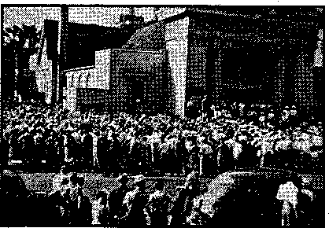
Packed out! but listening to Judge Rutherford
Additionally, there were thousands outside of the Hall, in the surrounding driveways and open spaces, as well as about 3,000 in and around the Eastern Star Temple with its two auditoriums. Approximately 30,000 persons found a place in and around Convention Hall, instead of the usual 19,000 permitted when, any other group outside of Jehovah’s witnesses are ®nder consideration.
At the last moment, on Wednesday, the first day of the convention, the authorities decided that the chairs must be fastened together in some way, or the convention could not be held! It was up to the witnesses; for the owner of the hall would not undertake the task (and apparently he had never before been required to do this, as the chairs were there without any fastenings of any kind). The legal (?) requirement for the occasion was met by obtaining strong rope and binding the chairs together in groups of three.
While Convention Hall presented manyproblems, there were seen to be some.favorable points as well, and Jehovah’s hand was seen in the choice finally of this hall.
Had Michigan State Fair Grounds been used it would have been possible to have all departments housed adequately in the different buildings on the grounds: book room, cafeteria, hospital, information, checking, etc. Convention Hall did not offer the same facilities on such a convenient scale; so arrangements for a number of these departments had to be made five blocks away, at the unit headquarters on West Alexandrine street. The hospital also had to be arranged at some distance away. ;
On the other hand, if the Fair Grounds had been used the witnesses would have been much more vulnerable to the attacks of lawless elements, as these grounds are away from the city, and it would have been necessary to scatter over a wide area both the conventioners and the ushers policing the convention. At /Convention Hall, on the contrary, all was compact together, and a solid, closely-bound-to-gether organization made for greater safety from attack. Being in the midst of the city would likewise tend to make the (un) American Legion and similar lawless elements hesitate to stage a disturbance. Further, in the midst of the great, number of witnesses, any other group was necessarily small in comparison. It is probable that all of these factors contributed to the peaceful progress of the convention, under Jehovah’s guiding and protecting hand. '
The heat was intense almost the entire five days of the convention, occasioning hundreds of cases of heat prostration, but through it all Jehovah’s witnesses proved their fortitude just as they do in bearing the heat and burden of the day in field service. Just before Judge Rutherford spoke on Saturday a re-
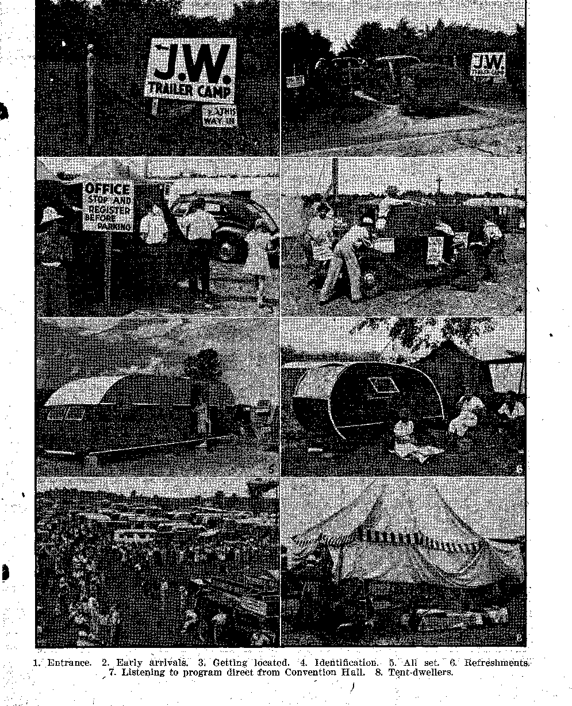
freshing shower cooled the atmosphere temporarily. The heat brought a number of peddlers to the convention doofs and vicinity selling fans, which were in great demand. After a while others appeared "selling canes, badges and pennants, the latter with the inscription “Theocratic Convention of Jehovah^ witnesses, July 24-28, Detroit, Mich.” A good mhny of these were sold to conventioners, who used them to give further publicity to the con-vehtion. Other peddlers appeared selling trinkets, but the demand for their wares was negligible. '
Ushers in Convention Hall and elsewhere wore badges to identify them. These bore the words “Theocratic Convention Jehovah’s Wit-■ nesses July 24-28, USHER”.
In some manner, on Friday, a stranger obtained 150 of these badges and disappeared with them. Obviously there was here an attempt to get a “fifth column” into the Convention Hall and cause trouble. New badges . simply bearing the words “The Theocracy” were therefore issued, of a different design, and supplied to the brethren serving as ushers. Announcement was made from the platform that anyone wearing the old badge.after Saturday noon should not be admitted. A few of the ushers failed to get their new badges, and were consequently excluded, somewhat to their embarrassment; but the purpose of the change was served, and troublemakers disguised as ushers did not gain admittance.
Legal Department
Jehovah’s witnesses are law-abiding. Hence they take pains to see that all opposition and persecution, are resisted and, if possible, over' come in a lawful manner. Detroit is called a Catholic stronghold. Doubtless, then, the distribution, early in the course of the convention, of the booklet Judge Rutherford Vn-covers Fifth Column .dealt the oppqsing element such a hard blow that it took them some time to recover and hatch up a scheme whereby they might, ‘frame mischief by law’. No arrests were made until Friday and Saturday.
Over a hundred workers were interfered . with by the police on those days, being taken into the station and questioned, and then later released without a charge. In many instances the police seemed to be putting forth an effort to bluff the witnesses by threatening arrest Unless they discontinued the magazine distribution in the streets or the door-to-door work.
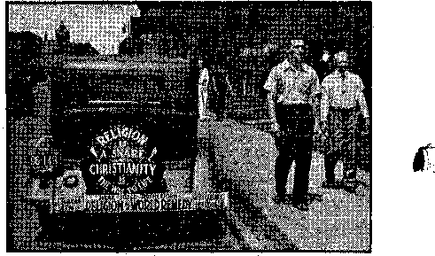
Bumper and tire-cover ads
The scheme did not work, for the publishers invariably continued their work without being further troubled.
An effort was also made by the police to prevent the younger children from engaging in the street magazine distribution, citing an ordinance prohibiting the children from working in this manner under a certain age. No arrests., however, were made in this connection.
Only 37 witnesses were actually arrested and jailed for soliciting contributions without a license. These cases are still pending. Inasmuch as the ordinance under which these arrests were made is identical with the one declared unconstitutional by the Supreme Court in the Cantwell case, the outcome is not in doubt.
In some parts of the city the police showed a marked Nazi spirit. In one instance an officer said, “You, had better move on before the Legion comes and mobs you. I am giving you a tip that they are on their way here now, and I will not be here when they arrive.”
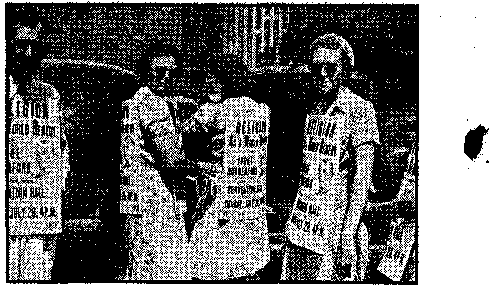
Going information marching
- The major interference with the work during the convention was by members of the American Legion and the Veterans of Foreign Wars, who ganged up on workers in various parts of the city, frequently with the backing of priests. There were more than a dozen instances of this kind, and in two instances the witnesses attacked were women, priests with collard and vests buttoned on backwards attacking them from behind. •
■ A score or more of mobs gathered against the witnesses in various parts of the town, as they were engaged in the. street work. The mob would surround an isolated publisher, and threaten him with violence if he did not discontinue his work or salute the flag. These demands were, of course, refused. In some instances workers were viciously assaulted. The police in every instance stood idly by and watched the mobs commit the violence, and, when requested to take complaints or make arrests, refused to do so, even where the identity of priests, Legionnaires or “Veterans” was established beyond reasonable doubt.
' The assaults were boldly resisted by the publishers, who gladly returned to the terri-tory the following days and pushed the battle to the gate, thereby proving the Devil to be a liar and striking terror into the hearts of Jehovah’s enemies.
Platform
The speakers’ platform was placed in such a position in the main auditorium that it could be seen also from three of the other four halls, through the wide doorways. The platform was made attractive by the display of palms .-^nd flowers, one basket centrally placed bearing a ribbon with golden letters, “The Theocratic Convention.” A rug covered the floor, and chairs of beautiful modernistic design were placed in convenient places for speakers and others serving on the platform. To the fore above the platform hung a large banner, embroidered with letters of gold, which said, “My heart shall rejoice in-thy salvation. —Psalm 13: 5,” the 1940 year’s text. Back of the platform was the sound-control room, from which through glass panels the operators could see the speakers and microphones at work. A fluorescent light over the speakers’ stand cast no heat; an important consideration in the very hot weather that then obtained. A further aid in reducing the arduousness of the speakers’ task was the installation of a 4-feet-tall cooling device, like a large electric
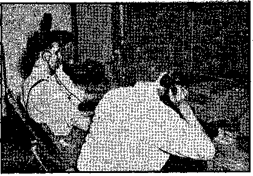
Tn the control room
fan, which kept the air in circulation across the platform. Being situated in a corner, the platform would-otherwise have been most uncomfortable during‘sessions.
The orchestra z pit was alongside the platform. The orchestra reached a peak of fifty musicians on Sunday, with wide variety of instruments, from all over the United States. It was conducted by a member of station WBBR’s musical staff at Brooklyn. By loudspeaker equipment in all halls (and at all the conventions during relayed programs) the orchestra served as excellent guide and support to the singing conventioners. Though scattered over a number of halls with partitions that prevented thousands from seeing the music conductor, the entire assembly sang together in marvelous unison, well reflecting how they unitedly sing together the Theocratic “new song” to all mankind. The songs were up-to-date, non-religious, energetic, in line with “present truth”, and singing them was a manifest joy to the conventioners. ;
To the left of the platform, and suspended from the ceiling above the center aisle of the main auditorium, hung a huge painting, beautifully executed in full color. It pictured the great multitude of people of good will hastening from doomed “Christendom” and joyfully fleeing to The Theocracy, so escaping destruction. Until Judge Rutherford introduced and released the new book Religion, Saturday afternoon, little did the conventioners realize or suspect that the painting was a large-scale duplicate of the embossed cover and frontispiece of a grand surprise for them.
Cafeteria
During the five assembly days no eating establishment in Detroit had a patronage at all
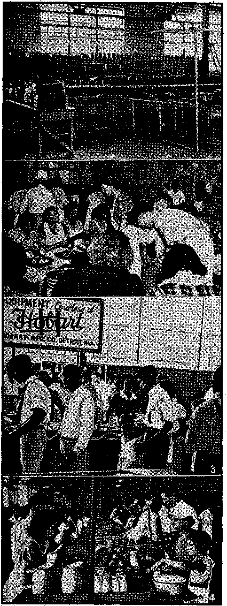
comparable to that of the convention cafeteria, a feature that ministered7 greatly to the health, comfort and convenience of the conventioners;
Businessmen of Detroit co-operated willingly in the preparation of the cafeteria by supplying equipment. The Hobart Company fur-, nished kitchen equipment valued at $2,065. The meat - grinding machine loaned by them was of the latest design and efficiency. The United States Slicing Machine Company loaned one of their latest slicers, valued at $1,000. The McCray Company furnished refrigerator equipment. The Gas Company freely supplied ranges for the preparation of food, as well as $500 worth of pipe required to handle the large-scale convention demand for fuel. Ruud Heaters to furnish hot water were loaned. There was also a machine that would quickly clean and peel either potatoes or carrots. A Champion dishwasher took care of 3,000 dishes in an hour, but many human dishwashers had to help out to take care of thousands of other dishes, spoons, forks, etc. All the equipment was put up by the publishers themselves, working night and day to get everything in readiness.
With an immense number of conventioners to be fed, cafeteria arrangements had to be extensive and thorough. With Jehovah’s blessing, wonders were accomplished. With plenty of lumber, tables and serving units were built up such as illustrated on this page. Ten of these (double) units handled the crowd with remarkable dispatch, especially when the immense numbers, and the rather cramped accommodations, are taken into consideration. Unable to take advantage of the convention cafeteria, thousands had to eat outside, and so at meal times long lines of hungry conven-tioners also formed at cafeterias and restaurants for blocks around in the vicinity of Convention Hall.
The cafeteria was operated, not for commercial profit, but for the benefit of the needy. Here practically all the pioneers and hundreds of others were given their meals free. '
Great surprise was occasioned when a Statement, read immediately after Judge Rutherford’s public address Sunday, July 28, 1940, declared: “Although we have spent thousands of dollars here with Detroit’s merchants, and have operated a large cafeteria to feed the poor, and although we are a charitable organ-
t. One of the cafeteria units. 2. In the kitchen. 3. Ready for a good meal. 4. What shall it be?
ization operating without pecuniary profit, the city tax collector has pursued the unusual course of requiring us to ?ay a license tax for the privilege of feeding the needy.” Does the city of Detroit pursue a like policy toWards its religious organizations under similar circumstances ?
Feeding some thirty thousand or more con-ventioners called for large supplies. The daily diet, with variations, included 2,200 pounds of bread and 600 dozen eggs, 300 dozen pieces of pastry and thirty or more, cases each of 50 packages of Corn Flakes and Shredded Wheat, besides cooked cereal. Also 50 baskets'of peaches and 40 cases of 126 oranges. All that for breakfast, leaving something over for dinner. At dinner 1,500 pounds of meat was prepared (varied one day with 1,200 pounds of chicken, and another—not Friday—with 1,500 pounds of fish). Some 14,000 half-pints of milk were . required daily, and 40 gallons of bulk milk and 20 gallons of cream. One ton of cabbage was consumed daily, and a hundred baskets of tomatoes, besides a considerable quantity of / other vegetables. Also, there were 250 pounds of cottage cheese called for daily. No mention is here made of pies, but there was a considerable supply of these also available.
In the kitchens a truck completely equipped with magnifying (loud-speaking) equipment made it possible for kitchen and cafeteria workers to hear all the convention proceedings without leaving their place of work. This ' feature contributed much to the efficiency of the cafeteria force. '
To complicate matters considerably a trucking strike was called in Detroit just as the convention was getting under way. This would have interfered greatly with the delivery of books and cafeteria supplies, had not the Lord opened the way for the publisher who drove the truck to obtain from the trucking union a pass, willingly granted, ’ giving him unhindered freedom to go with the truck wherever the convention interests required him to go.
Convention Highlights ,
The morning of each convention day, except Sunday, was devoted to field service. The Assembly for Field Service was at 9 a.m., and was marked by singing, prayer, and the read-
5, 6,7. Views of the.great dining hall.,
8. Aids in keeping cool. .; .
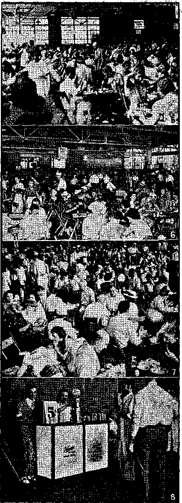
ing (from the 1940 Yearbook) of the text and comments for the day. Announcements relating to the field service and other convention concerns were also made. Then, at 9: 30 the witnessing parties departed for their territories, to bring to the people of good will the glad message of the Theocratic .Kingdom of Jehovah. They also engaged in “information marches” with large placards, and street witnessing with the Watchtower and Consolation magazines. x
As they, made these efforts to comfort “all that mourn” they met, some who were not of ' good will, either toward God or man. Such showed their animosity in various ways. In one case a priest and one of his flock attacked a woman bearing a sign advertising the Sunday lecture. They tore off not only the sign, but also part of the woman’s clothing.
Sunday morning witnessed an assembly for baptism. Besides the candidates for this symbolic immersion, thousands of other conven-tioners came to the auditorium to hear the. Scriptural presentation of the significance of this symbol. Then hundreds of cars took the “great multitude” of newly consecrated ones to the immersion pool, some distance away. Cars were lined up three deep for many blocks along Cass avenue, and police officers gave needed assistance to make things go smoothly. The pictures will tell, the remainder of the story from here on, taking you to the immersion pool and showing the large numbers of those baptized. Incidentally, it is of interest that the papers gave special space to the fact that the governor of Michigan had gone elsewhere to attend an unusual local religious event, an “impressive” baptism service at which some twenty persons were immersed. There were 1,634 immersed at the convention of Jehovah’s witnesses. ■
While these members of the “great multitude” (Revelation 7: 9) were being immersed, the convention at the main auditorium and connected halls was being addressed on the subjects of “Co-ordinating Field Activity” and “Organizing Isolated Territory”. > '
During the course of the convention many talks were given on’a wide variety ,of Scriptural subjects by publishers from all parts of the United States and from Canada, as well as some from Europe. Great thrills were ex-
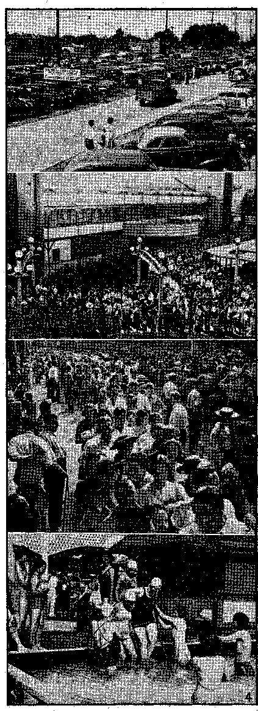
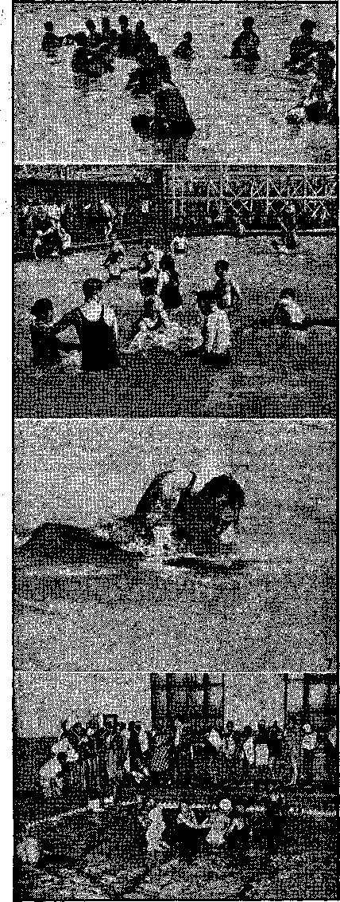
perienced listening to accounts such as from a regional servant from the mob-swept areas of Texas; also from a regional servant from Canada, with its ban On Jehovah’s witness; also from the erstwhile servant of -the Berne ' (Switzerland) branch, who braved many dangers from Nazi-Fascists to get out of Europe and..in time to the convention.
Field Service, etc. "
Mention has already been made of the various forms of field service that engaged some of the time of practically all the convention-ers. Of the literature taken to Detroit, the following disposition was made:
Placed Placed Taken
Field Conv’n Home Total
Books 2,967 21,688 51,060 75,715
Booklets 210,323 129,059 100,000 439,382
Magazines 16,123 16,837 .32,960
Kingdom News 100,000 1,926,000 2,026,000
This report does not reflect the full amount of service rendered by the publishers ht the convention. A very large force had to be used for day and night guard duty throughout the auditorium, trailer city and Alexandrine Hall, in addition to the regular ‘maintenance and operation of convention departments which usually absorb a great number of workers.
The following precautions were taken to insure proper observation and protection for workers'in the‘busy downtown areas: Magazine work on the streets, information marches and business witnessing were co-ordinated as far as possible. The time set aside for the first two features of the work particularly was from 11 a.m. to 1:30 p.m. and from 5 p.m. to 6 p.m., and from 10 p.m., to 11:30 p.m. The late evening hour covered the theater area. The co-operation of all the -witnesses in the service worjj was excellent. A very fine spirit was in evidence throughout and there were practically no complaints heard.
Camera Department
Cameras owned, by conventioners were put to use'in the service of Tne Theocracy. Freely offered, these were employed to make records of convention activities, and, in some instances, of interference and opposition by lawless elements.
5,6. Many immersed at once. 7. Complete consecration. 8. Immersion of colored friends.
the Trailer Camp
The convention trailer camp was a novel and attractive feature of the Detroit convention. There were hundreds of house-cars and trailers, as well as a number of tents and other contrivances for accommodating those who take to the road in the service of the King. Among the many trailers and house-cars there were a few homemade ones, but for the most part they were of the well-built commercial type. As usual in the case of cars used by witnesses, newspapers gave special attention to the “ancient jalopies”, of which there were but a few. ' Such, however, testified to the owners’ determination to devote full time to the greatest service imaginable.
The ones in charge of making arrangements for the trailer camp looked about for a site without success until they secured the free use of a, piece of pasture-land (about 20 acres) owned by a Kingdom publisher, on the same road to the east of the so-called “Shrine of the Little Flower” operated by one radiocasting foreign priest whom Detroiters dub “Silo Charlie” (with reference to the suchlike tower of his million-dollar “shrine”). This was converted into a splendid site for a trailer camp, some twelve miles from Convention Hall. Plans were made to have a well-organized camp, and the ground was staked off, starting at one corner and making roadways 30 feet wide, allowing space between for two rows of trailers, each trailer to occupy about 20 feet of ground.'
A water supply would be required, and the witness who owns the farm set to work to get the necessary material, which he, being a contractor, was able to get wholesale. Pioneers and others worked day and night to get things in shape.
, A pipe line was laid extending from one end of camp to the other, a distance of some 400 feet, with hydrants at 20-foot intervals. A hundred-gallon pressure tank was installed to insure a good flow of water.
A record was kept of every trailer that came in, with information as to the individuals in each trailer. The camp (dubbed “Jehovah Village” by newspapers) was better organized and managed than many a city. A directory was kept at the entrance of the camp, and it was an easy matter to locate anyone staying . there.
An office was put up at the entrance of the camp, with office arrangements and provisions for policing the grounds. There was a chief, with assistants for each “street”. The streets1 were patrolled regularly throughout the night.
One night, July 22, when there were already a number in the camp, the power was shut off and men came in wanting to know if it was an American camp. They were assured it was, with added information. A little later on the mayor of the adjacent town came in with the town clerk, stating that he had had many calls and inquiries as to what this camp was. He came out to see for himself. After being courteously received and given an explanation as to what the-camp was there for, he went away satisfied. . ’
One night before the convention opened, about 1: 30 a.m., a leader of what was claimed to be the Ku Klux Klan came with four autoloads of ruffians, demanding entrance to the camp, and carrying a flag. (Why do such trouble-seekers usually cover themselves with a flag?) He was given assurance that this was not an un-American work. When he saw the flash-cameras clicking, taking his picture and pictures of his motorcade and their license numbers, he beat a hasty retreat, but saying “We’ll be back”. After his departure the camp guard was doubled.
Provisions were made in the camp for refreshments, and arrangements were also made for conducting a cafeteria on the grounds for the benefit of the campers.
The camp was fitted with sound equipment for the purpose of making important announcements, and, as mentioned elsewhere.
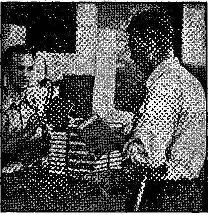
Pioneer getting Religion
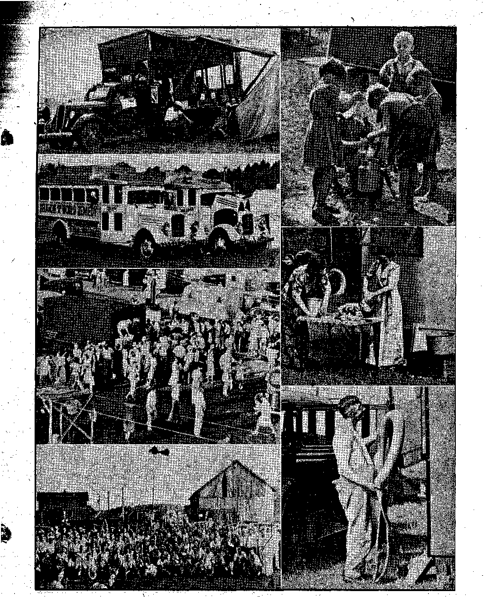
1. Traveling ‘Fifth; Avenue’ style. 2. Chartered buses. 3. “Locusts” and truckload of truth. 4. The visible guard. 5. “Drawers of water.” 6. Washday. 7. “That ought to hold till we get home.”
the convention proceedings for Saturday and Sunday were relayed to the camp. .
Camp Items
The witness who provided the land for the trailer camp used the hay taken from the land to provide beds for conventioners who could not otherwise be accommodated. A sound-cur was used to pull the inowing machine that “cleared” the land.
There was a 20-foot trailer in the camp 'which provided accommodations for a family of six, containing three double beds. The trailer weighs twro tons.
Witnesses from Emporia, Kansas, to provide accommodations for a party of ten at a minimum cost, rented a tent and obtained ten cots, which were placed along each side. The tent also provided room for a kitchen table made from a top built for the car to carry all the luggage. With the sides up the tent was not uncomfortable even in the exceptionally hot weather that obtained during the convention.
Twelve thousand heard “Religion as a World Remedy” out at the camp Sunday afternoon through the loud-speaker or public-address system. The trailer camp was the only section that at any night of the convention had to meet “out under the stars”. .
Hospital
At the Strathmore Hotel, adjacent to the Temple on Alexandrine street, arrangements were made for the use of a large dining room to accommodate the hospital. There were in ! attendance 12 physicians, 5 osteopaths, 16 . chiropractors,' a dentist, and 35 nurses. Dr. Ilett (which the newspapers spelled Eyelett!) was in charge. On account of the extreme heat a larger number than usual had to be cared for at the hospital. During the five days of the convention 1,403 received treatment. Regular ambulance service by means of convention service cars was maintained between the hospital and Convention Hall, four blocks away. ' ■ ’ ' ' ' ’
Notifying the Public
' The wrork of publicizing the convention expanded to magnificent proportions, what also with highly organized opposition and sabotage operations by the enemy to be overcome. A start was made with a niodest, second-page announcement in the April 1 issue of The Watchtower, naming Columbus, Ohio, as the place and July 24-28 as the dates, for a “Theocratic” convention of Jehovah’s witnesses.
Next to do was to advertise intensively, far and wide! The great multitude of North Americans of good will must be notified and interested in attending. To make it convenient for all to get there, the convention must be made nation-wide in a literal sense, with regional subsidiary conventions clear across the continent. Besides the key city, 31 convention cities were chosen and local machinery set in motion. At the Brooklyn printing plant the presses ground ceaselessly turning out 15,000,000 announcement-invitations, which began to be distributed generally throughout the nation six weeks before the announced dates. Later, 4,000,000 special invitations, showing local convention halls, were run off, and distributed exclusively at the convention cities apd their vicinities, immediately • before and during the convention. ■ i
Thousands of letters were mailed out by companies to persons of good will listed in their files. The Watchtowers Brooklyn office prepared and issued special news releases to the public press. Few newspapersdiad the courage or interest of the people at heart to pript the ' same in their columns, which emphasized all the more that advertising The Theocracy is delegated to Jehovah’s witnesses as a favor and privilege from the great Theocrat himself. The witnesses responded, with more telling effect than columns in Hierarchy-dictated newspapers could have done. Every conceivable form of advertising was resorted to: billboards at strategic locations; parade floats; streamers; signs mounted atop and astern motorcars or painted on the sides; thousands of latfge placards displayed in business shop windows; flasher-signs in private homes; information marches through crowded traffic thoroughfares by thousands of witnesses, in small bands, bearing placards suspended from the shoulders fore and aft; radio announcements; besides the general handbill distribution. This represented hundreds of thousands of hours of personal field activity weeks be- . fore and during convention. ' M
Meantime Jehovah’s witnesses came more W prominently before the public eye through other causes, wherein Satan and his earthly stooges overreached themselves. Persecution, unparalleled in American history and to the country’s lasting disgrace before God and man, broke forth with the fury of a tempest and raged from coast to coast and border to bor-
1 der. It became a public scandal. Newspapers (and radio stations), which spurned to give favorable publicity to the Theocratic Conven-? tion noiy wallowed in a campaign of perver-sjop pf facts concerning the religious mob vio-fence and persecution and the real instigators causes thereof,f all to besmirch everything ’ 1' - pertaining to Jehovah’s witnesses. Few were
the courageous editors that came out in deA fense of constitutional rights and immunities of Jehovah’s witnesses in Anierica. All this ,:: only served to focus sharper attention on these . f . Theocratic ambassadors. It awakened the sym-?, pa thy and support of countless persons of
good will and heightened their interest in the ' coming convention. Then, cancellation of contract for use of Fair Grounds at Columbus '' --", induced the nation-wide circulation of the Petition addressed to Ohio’s governor and . other state officials to enforce the keeping of the contract. This.resulted in further advertising the convention to millions, of whom
< 2,042,136 signed the Petition. Another city,
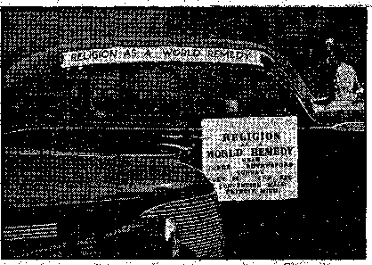
Effective advertising
which suffered a like cancellation of hall contract, additionally circulated its own local petition. Thousands of letters were addressed i - to hotel managements and private citizens of .. z Columbus who offered their homes for entertainment of conventioners, explaining why ' their city had lost this convention' and its . benefits and advantages, and specifically who ab were to blame. What an advertising cam** paign this, to the chagrin of the skulking . ■■ Roman Catholic Hierarchy!
Panoramic Survey of Convention Chain
■ The arrangement as it finally went into effect included 18 assembly cities, in 13 states and the territory of Hawaii, with Detroit as key assembly point. Conventions of Jehovah’s witnesses are not get-togethers for sociabilities and yenewal of old acquaintanceships, but for work, testifying to Almighty God’s name and His Government by Christ Jesus. By its fieldservice attainments the 1940 Theocratic convention shattered, the records of all previous general conventions in North America. It was and is outstandingly distinguished for Theocratic action, against which Catholic Action and other un-American action raged and dashed, in vain!
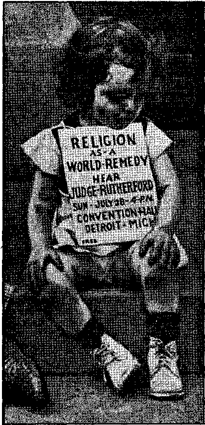
Little information* marcher
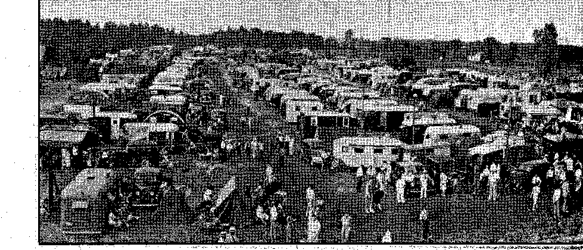
Panorama of the witnesses’ trailer camp, where 12,000 heard the lecture. Note hu
Day by day attendance at the 18 conventions mounted. Saturday afternoon it rose to the number of 49,354, which represents about five-sixths of all active publishers throughout the United States. War conditions bottled up the thousands of Canadian, witnesses from coming. Hence upon these 49,354, it may be deduced, fell the privilege of all the service and field activities, as field-service days rah from Wednesday to Saturday, inclusive. Sunday the attendance leaped up to a crest of 79,335, not counting the thousands who were unable to gain access to the auditoriums for the public address.
Sunday morning a grand total of 3,664 symbolized by water immersion their consecration to God; which is undeniable' proof that the “great multitude” of the Lord’s “other sheep” are being gathered under His Theocratic organization. Compare this with the day of Pentecost nineteen hundred years ago, when “the same day there were added unto them about three thousand souls”.—Acts 2:41. ,
Due to the many convention requirements, such as administration, maintenance, policing, sign-painting, book department, cafeteria, sound system, financial and information departments, hospital, etc., many thousands of publishers could not get away into those field activities for which they could report time; yet theirs was Theocratic activity in equal degree with that in the field. At that, 29,163 individual publishers reported field work, ex
pending 110,735 hours. Their results may be distributed as follows: Books placed, 3,993; booklets (chiefly Judge Rutherford Uncovers Fifth Column) ,>250,859; individual copies of The Watchtower and Consolation, 28,118; magazine subscriptions obtained, 174; back-calls made, 7,845; and sound attendance hearing recorded. speeches, 188,004. Additionally, at the convention halls there .were placed, books, 29,875 (chiefly Religion); booklets, 7,271. This brings the literature output up to 291,998 pieces, not including7 the millions of handbills and copies o£ Kingdom News No. 5 and No. 6. /
Everything taken into consideration, then, practically all the 49,354 of Saturday’s attendance had some share in convention activities, as against the 29,163 shown in the Field Report. Had the original 32 cities been permitted to carry through with convention arrangements and all participated in the chain, ।' what thousands more could have attended, । and what a total attendance, baptismal and ! field service record there would have been! : But as it is, little satisfaction or consolation । can be drawn by the enemy from such undercutting of the possible total report as accom- i plished by their wicked religious intolerance, ; opposition, threatening, and violence. Jeho- i vah could have stopped the enemy. Since. He ' did not, it must be conceded that the final [ grand result was and is according to His: will and to His exceeding praise and vindication ' ;
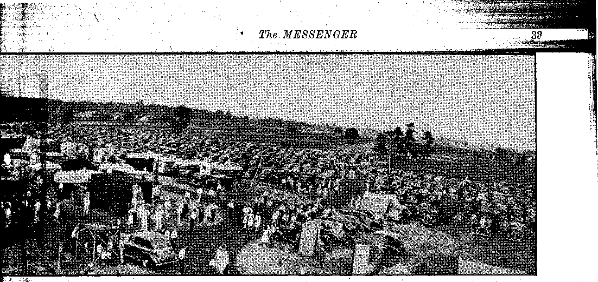
hundreds of cars in distance, and still coming. Photo taken half hour before public address.
With the above in mind, read now the following reports from the seventeen other conventions tied in with Detroit by private land wires, and also from cities where foul enemy action prevented convention plans from there being consummated:
Atlanta, Georgia
JEHOVAH’S witnesses, as law-abiding citizens and taxpayers, are entitled to the free use of public facilities and buildings as are other groups. However, at Atlanta, pressure by an un-American flag-waving cult made it necessary for the witnesses to pay for the use of the Atlanta Auditorium. Thjs required the issuing of a lease. That, in the Lord^s providence, was a good thing/ for, had there been no lease, the use of the auditorium would in all probability have been denied Jehovah’s witnesses at the last moment. Pressure in that direction was brought against the mayor, Mr. Hartsfield, and Mr. White, chairman of the Buildings Committee. . .
The day before the convention, Mr. Welborn, the Auditorium manager, told the convention servant that a great effort was being made to h^ve Jehovah’s witnesses excluded because of their attitude toward the flag. He said that civic organizations, women’s clubs, patriotic organizations, and delegations of all sorts, were besieging Mr. White with telephone calls, telegrams, visits to his office, and even visits to his home in the evening.
Because of the agitation, the Atlanta Constitution sent a reporter, who spent the entire first day of the convention gathering information. On Thursday a fine column-long article appeared on. the front page, middle, of the paper, presenting Jehovah’s witnesses in the proper light.
The Atlanta chief of police saw that the convention had proper police protection. He said he would protect the rights of Jehovah’s witnesses against all interference, and that there would be no mob violence in Atlanta while he was chief. Pressure upon public officials continued through Thursday, and some of the women were so unreasonable that Mr. White said he would have slapped them down had they been men. .
Friday the opposition died down, as the firm stand for simple justice which the authorities had taken had its effect.
At the close of the Sunday afternoon session two resolutions were adopted by the convention: one in- appreciation of the relayed programs .from Detroit convention; the other thanking the public officials and others for their co-operation in overcoming the opposition of unreasonable patrioteers.
The convention servant requested the Auditorium management to see that a flag was displayed on the platform, and if Anything was said about it, to reply that it had been placed
there at our request. The reply was that they had no flag for that purpose, but that one could be rented from a near-by decorator. A flag was then ordered to be delivered to the stage, with instructions to see that it was properly displayed. Naturally, when enemies accused Jehovah's witnesses of disrespect to the flag, its presence on the platform was a complete evidence of the enemies’ prejudice, and maliciousness.
The fact that the outfit trying to stop the Atlanta convention knew all about cancellations in other cities reveals a thorough organization back of the apparently patriotic groups used as the cat’s-paw to pull that organization’s chestnuts out of the fire. How much longer will the Roman cult be able to fool real Americans?
Telegrams from the Atlanta convention to Detroit are of interest here:
• v . •. ■ -
July 24: Just had conference with auditorium manager. He revealed great pressure brought against city officials to'cancel contract. Know all about other cancellations. Their decision is to back us up to the limit and official Atlanta is for the convention. Ordered police department to give us special protection. Many police in evidence. Special police detailed to guard telephone lines. All set for opening. Praise to Jehovah.
' July 27: Joyfully heard ‘Times and Seasons’. Reception fine, excepting fifteen-second interruption. New book a thrilling surprise. We all have “Religion” now. Police chief promises ample protection tomorrow. Every precaution taken. ,
July 28: We, Jehovah’s witnesses, assembled in the Theocratic convention at Atlanta, Georgia, enA thusiastically join with our brethren in Detroit and elsewhere in full support of the timely Kingdom truths so kindly and fearlessly presented in the messages from Detroit. We express our heartfelt thanks to our dear Brother Rutherford for his tireless labor of love on behalf of all who love righteousness. We thank Jehovah, the great Theo-crat, and His King and Executive Officer, Christ Jesus, for this convention, for the exercise of His power which has made it possible, and especially for the new book Religion as another Kingdom instrument for carrying forward His work on the earth. And we pledge ourselves to the task of carrying forward the work which He has placed in our hands obediently and with all the zeal peculiar to His house. We shout “Amen” to every word of the speech “Religion as a World „ Remedy”.— Atlanta Convention.
There were 160 persons of good will im' mersed at Atlanta, symbolizing their complete devotion to Jehovah God and His kingdom.
Beaumont, Texas
THE Chamber of Commerce of Beaumont wanted Jehovah’s witnesses to come to their city. The Fair Grounds were offered free. The mayor stated on May 31 that he had read the Watchtower literature, heard Judge Rutherford’s talks, and realized the intolerance and aggressiveness of the Roman Catholic Hierarchy , in opposing the work of Jehovah’s witnesses, but that he would stand on his own integrity and see that the use of the Fair Grounds was not interfered with, so no formal contract would be necessary. Then he issued a public statement which the papers of Beaumont published, and which appears below as published.
MAYOR UPHOLDS RELIGIOUS MEET Morgan to Back City Permit for Jehovah’s witnesses Session Here • Jehovah’s witnesses have a city permit to hold a July 24 to 28 convention at the fairgrounds and as far as Mayor George W. Morgan is concerned that certificate is as good as gold.
About noon yesterday he set forth his ideas on the matter, conveying one copy to officials of South Texas State Fair Association and another copy, to the press. ,
’ . Advice Given -
He advised the' alarmed unnamed citizens to go take a dose of purgative and cleanse their poisoned systems.
There had been a lot of talk about town but no individual organization had comp forth publicly with a protest against the Witnesses and their convention., '
The American Legion post Tuesday night adopted a resolution which inveighed against un-American practices but the statement was generalized and named no one.
The, mayor’s statement, however, was interpreted as an answer to the Legion in case the Legion had Jehovah’s witnesses in mind Tuesday night. He evidently thought so, too.
. Mayor’s Statement
Here is Mayor Morgan’s verbal dose of medicine conveying his ideas of un-Americanism:
“It is my wish not to become personally involved or to involve my administration in any way in any kind of a religious controversy. I hold no brief for the organization of Jehovah’s Witnesses and know very little about them except that they are a harmless and peaceable group of American citizens who hold religious beliefs somewhat contrary to my own.
“Several of the present members of that organi-, zation I have known for a number of years, and if they are all like, those I know I feel that no in-
may hold. The democracy of Germany was destroyed by such intolerant mob action on the part of Hitler’s “Black Shirts”, who loudly claimed that their action of lawless vandalism was for the good of Germany. With this institution of the totalitarian state there, Jehovah’s witnesses, as a result of the concordat established between Hitler and thqf Roman Catholic Hierarchy, were the first to suffer. They refused then and steadfastly refuse to this date to salute the “swastika” and “heil” any man. Now this totalitarian monstrosity is marching across the world, and who can deny that it is the “abomination that maketh desolate”? It assumes rulership of the people which rightfully belongs to Christ Jesus. Those who wish Jehovah’s protection must now study His Word, the Bible, and obey the provisions contained therein.
As to the retraction of your position in upholding the permit of Jehovah’s witnesses to use the South Texas State Fair Grounds for their convention, the Beaumont Enterprise carried the information that the reason assigned by you for your action wjis that the position of Jehovah’s witnesses had been misrepresented to you. Mr. Smith and I called upon you on June 18 at your request and, after discussing our position, we left with you the booklet Neutrality, the booklet Loyalty, and the magazine Consolation No. 540, in order to prevent any such claim-of misrepresentation from having a valid foundation. Your, reversal of attitude toward Jehovah’s witnesses and their constitutional rights is a long step toward putting us at the mercy of mob violence. As to what you do now or in the future, the responsibility for your actions you will bear before Jehovah God.
Boise, Idaho
MOST of the servants appointed by the Society arrived in Boise about the 10th of July, also several assistants. Work started immediately in making billboards, painting banner signs for the advertising of the Theo-x cratic convention. Three large signs were made and put on the three main highways that lead into thq city. These signs were four by eight, built and painted by our sign-painting crew. While these signs were being made others found people of good will who would allow these signs to be put on their farms. '
Stencils also had been made and the cars of those who attended the convention were washed and polished. Then signs were sprayed on the body, advertising the lecture—“Religion as a World Remedy, July 28 at 2 P.M., Columbian Club, Boise, Idaho”. On the hoods and the fenders were signs “Hear Judge Ruth-erfdrd”. These signs were of bright yellow and a little red fogged on. The signs on the cars
formed and fair person would accuse them of being unpatriotic in any sense. It is true that they are what is generally known as conscientious objectors, which as I understand it means that thev oppose offensive warfare but when it comes to the matter of defense of their home or home land they will take up arms and fight as heroically as anyone else.
Flag Question
-
• “They refuse to go through the act of saluting the American flag. This is not because of any disrespect for. their country, its laws or its emblems, but they regard the act as idolatry worship and as contrary to the teachings of the Bible.
“I think it will not be difficult for any honest and intelligent person to understand this viewpoint. The supreme court of our land has had this matter before it and has decided that their refusal to salute the flag is not in violation of our constitution and laws and that no law can be enacted in keeping with our constitution that might under-. take to require this of them.
-
■, “This means simply that we can still enjoy in this country freedom of speech, freedom of conscience, and the right to worship God according to the dictates of our conscience.
' Cure Is Given .
“It is my informed belief that this group of people can not honestly be placed in the category of a fifth column, that they have no unpatriotic feeling or intentions, and that they are simply a group of people who are practicing a religious belief differing somewhat from my own.
, “To those organizations or persons* in any walk of life who will so forget themselves as to attribute to these people unpatriotic and improper intentions, I recommend that they take a strong dose of purgative and get the poison out of their systems and try to go along during these unsettled and trying times sensibly and undertake to keep down rather than stir up hatreds and strife.”
In less than four weeks the mayor repudiated it completely and denied the witnesses the Fair Grounds he had so stoutly insisted they should have. A mayor that hasn't any backbone is better off than one that claims to have one and has only a cotton string in its place. ;
Jehovah’s witnesses put it up to the mayor in . language that should have burned him up. Here are a couple of paragraphs from a letter which they wrote to him that speak for themselves :
We think that the action of any group, whether large or small, to the intent of depriving another group who disagree with them on their Constitutional rights, life, liberty, and the pursuit of happiness, without due process of law is a subversive action of the first water, regardless of the claimed patriotic motives which such an intolerant group
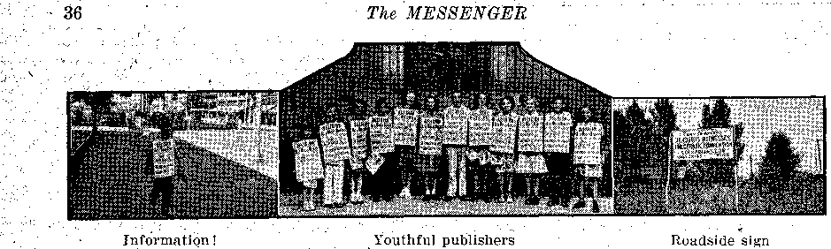
were very well put on, and several comments were heard as to the success of this method of advertising.
This work was all done in a small lot located behind the local Kingdom Hall. The lady who owned this lot had it cleaned up and she let us park our trailers in this lot without cost. She also turned over to us a rooming house of nine rooms which was above the Kingdom Halh This was turned into office and ? sign-painting rooms until we could move into the Columbian Club. There being several other v rooms that were' not being used for office, etc., arrangements ;were made for some to sleep here. This arrangement housed fifteen persons that were helping to advertise the convention.
4 We had parked four house trailers in this lot, but there is a city ordinance against parking house trailers within the city limits. The building inspector was tpld what our work is, and that it was all done for the welfare of the people of Boise. He then consented to let us stay here until the end of the month., This all worked out to the glory of Jehovah and also shows that Jehovah blesses those, who trust and serve Him.
Local and near-by company publishers seeing the work that was being done in this camp, most of whom were pioneers, contributed food of all kinds for this hard-working camp, each one doing his part with joy in his heart that he too could have a part in arranging the great Theocratic convention in Boise, which would give a mighty witness to the name of Jehovah in this section.
. The conduct of the police was very good. Chief of Police Utley and Mayor Straight,, also the Chamber of Commerce, were very considerate of our work. The chief of police gave good advice to the publishers. The advice given was to “avoid all controversies; do not talk back to people who speak evil against you; just walk away from them and avoid mob violence as much as possible. If you co-operate with us in this we will do our very best to protect you. We want the convention of Jehovah’s witnesses to be a success and to be enjoyed by all who attend. We know that the work of Jehovah’s witnesses is not Nazi or Fifth Column”. The chief of police personally • made a check on the work being done by the j publishers, in Boise, in the house-to-house witnessing. He asked people at their homes as to " , the conduct of the witnesses that had called at the homes, and in almost all cases was informed that “they were very kind and polite when they called on us”.
All meetings were well attended by men, . women, and children. They were all orderly, enthusiastic and eager to learn. The discussions and demonstrations were to help the publishers to be more efficient in every branch of the service.
The new phonograph was indeed a surprise to all. Keen interest was shown in its operation. Several expressed their desire to have one of these machines as soon as possible.
At the Saturday afternoon talk from Detroit, on “Times and Seasons”, by Judge Ruth- , erford, the reception was very good, clear and pleasant to listen to. At the close of the talk the Resolution was unanimously approved. There was great enthusiasm and grateful appreciation for the release of the new book Religion. The book was indeed a surprise to all, and after glancing through its pages everyone knew it *was a provision of the Lord to help instruct the “other sheep”.
At the meeting Sunday afternoon, during which the address “Religion as a World Remedy” came from Detroit, the reception was \ $ marvelous, very clear and distinct. The music was lovely. The whole auditorium was filled, besides some on the speakers’ platform and in the cafeteria room, Everyone present listened attentively ■ and carefully. There was no sign of disturbance, and everything went well. Sincere approval and appreciative thanks for the message was shown, ranging from vigorous hand-clapping to tears.
A resolution was passed to issue a vote of thanks to the officials of Boise, to the women of the .Columbian Club, where the convention meetings were held, and to the landlady of the Kingdom Hall in Boise, for their many courtesies and co-operation. This was unanimously adopted and agreed to by the witnesses, by the raising of the hand.
Telegrams from Boise were as, follows:
(1) “Theocratic greetings; program enjoyed at Boise convention. Enjoy the warfare with you until the finish. Everything okay.” (2) “Jehovah bless and keep Brother Rutherford. With you heartily. Boise convention right in the fight. ‘America’s Friends’, grand. Perfect reception. New phonograph a miracle. Hurry the manufacture. Thanks!” (3) “The book Religion a Theocratic masterpiece; Jehovah’s provision. Boise municipality, citizens and witnesses extend best wishes to Brother Rutherford and warriors at Detroit. A grand lecture. Aye!”
Boston, Massachusetts
HE convention was a great success, a grand testimony to the praise of God’s name all over New England. The Devil did everything possible to interfere, but all in vain. As soon as the advertising matter was out stating that the New England sub-convention was to be held in the New England Conservatory of Music, the Devil through his usual agents began putting pressure upon the treasurer of that corporation; but he is a man of conviction and principle and was unmoved. The witnesses were tenants here for many years, paid their bills, conducted themselves as Christians, helped keep thp place clean, and so it was not easy for corrupt politicians to apply political pressure in behalf of the Roman Catholic Hierarchy. .
: Faithful witnesses guarded the convention night and day. This is necessary now. But there was no trouble, and perhaps for that very reason. Jehovah God expects His people to fully do their part; and then when He is called upon for aid, He does what they can not do.
Not all Boston police are evil. One good man, an officer on duty at the convention, said to one of the witnesses, “I feel like crying.” Pressed for a reason for the statement, he said that in times past he had caused trouble for Jehovah’s witnesses, because he misunderstood their work, but being on the ground, and watching them, and hearing the talks, he is convinced they are a good people doing a good work. A second officer said he could never arrest one of Jehovah’s witnesses. A third obtained a Bible and some literature.
There was tremendous publicity. Reporters and newsmen were around all the time, and as their writeups freely advertised the public meeting in Symphony Hall, Sunday, there was a banner attendance to hear “Religion as a World Remedy”. More than half were strangers; there was an overflow from the main hall to one of the lesser halls; attention was excellent; there was not the slightest disturbance of any kind; the enemy stood back and beheld and the people of good will toward God listened and considered. The discourses came over from Detroit clear as a bell. A businessman, provoked by the convention arrests at Boston, came to say, “Stand on your constitutional rights; for you have a right to worship as you choose.” Despite the intense heat, there was little sickness. One minor injury to a witness was inflicted by boy hoodlums.
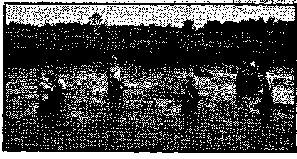
Immersion in river. Boston. '
Gallagher, Flaherty and Dennis Collins
The • anticipated opposition to the sub-convention at Boston, Mass., culminated in the persecution of a few women and children, ,with subsequent conviction in court, but the widespread newspaper publicity only served tQ more fully advertise the Theocratic convention and thus further vindicate Jehovah’s name.
On the second day of the convention police officers by the names of Gallagher, Flaherty, Collins and Clifford arrested 25 of the witnesses on downtown streets wearing placards and passing out flyers advertising the Sunday talk. Jammed into the patrol wagon with only a tiny opening in the roof for ventilation, they were forced to ride standing up over'bumpy cobblestone streets to the police station.
The police officers must have been proud of their work when they included eight-year-old Irene Smith from Bangor, Maine, in the group of 13 children taken in the dock with the 12 adults. One of the morning newspapers displayed on the front page a picture of little Irene in the arms of her mother, Mrs. Glenice Smith, 33, with the title, “Both Went to Court.” The happy faces of both mother and child were an eloquent testimony to the faith and courage of those enduring persecution for the sake of The Theocracy.
While awaiting the action of police in the station, a group of five youngsters were asked by a newspaper photographer to line up in front of circulars advertising rewards for the apprehension of desperate criminals and assume a pious, religious pose with folded hands and bowed heads. This request amused the children to such an extent that they threw up their hands and burst into laughter. Their picture appeared thus in the afternoon edition. Other pictures showing children wearing placards with the announcement plainly visible were published in other papers. Thus the Symphony Hall meeting was more fully advertised than it would have been if the witnesses had been unmolested. . (
Serving the Roman Hierarchy
In Municipal Court Judge F. Delano Putnam fined the 12 adults $2 each on the charge of carrying placards without a permit, but in the near-by Juvenile Court Judge John F. Perkins dismissed similar complaints against the nine girls whose ages ranged from 11 to 13 years. However, Judge Putnam did take into consideration the Supreme Court ruling cited by Attorney Clarence Scott of Oldtown, Maine, in finding the adults not guilty on the handbill circulation charge. Bonds totaling $600 were furnished for the appeal of the 12 cases to the higher court. . *
Th$ Paul Reveres of 1940
The Boston arrests stirred the editor 7of the Sudbury Beacon and neighboring small town weeklies to comment in the issue of July 26:
The Jehovah’s Witness movement is not antiAmerican. The people' who make up this group are old-line Americans with the greatest sincerity 'and the highest ideals. Their devotion and willingness to sacrifice for their beliefs and for the Cause of Christ as they see it is most inspiring in an age given over td self-seeking and self-indulgence to an alarming degree. Boston police have not always been wise in their approach to things they do not understand. If the accounts in the Boston papers are correct, the Witnesses are sadly misunderstood. We believe that the people of Sudbury, where the . Witnesses have a farm, school and many adherents, know the sterling worth of their neighbors and will vouch for their sincerity.
f Further evidence that Boston businessmen are waking up was seen in the visit to convention headquarters of a dignified bond broker. “I’m interested in you people for the stand you take,” he told the convention servant. “I hate hypocrisy. I hope you people continue to stand on your constitutional rights and worship God as you see fit.”
When the sub-convention was fiyst advertised, threats were made to the manager of the New England Conservatory of Music by a Boston city councilor by the name of Sullivan that the license of the conservatory would be suspended for the duration of the convention. Letters threatening boycott were also sent to the manager. ■
One morning during the convention United States District Attorney Edmund J.’ Brandon, in a telephone conversation, advised the convention headquarters that he had received a telegram from Washington, D. C., sent as the result of a phone conversation between the chairman and federal authorities the previous day concerning the license suspension. The federal district attorney stated that if there was any abrogation of the civil rights of Jehovah’s witnesses, they were to notify him at once and he would take immediate action.
After that, with the exception of the down-. town arrests, the police were particularly courteous and the co-operation from both near-by stations was perfect. The officials of Stations 10 and 16 assured the convention servant that they wanted to do everything possible to prevent any disturbance. On Sunday many police officers in civilian clothes mingled with the 300 ushers in Symphony Hall to avert the possibility of any disorder.
In reporting the Sunday address the following morning the Boston Post had the courage to identify the religion of Hitler, Franco and Mussolini as the force working for the domination of the earth. The difference between religion and Christianity was also pointed out. The Boston Globe dared to quote Judge Rutherford in terming “organized religion as - a snare and as demonism”. ’ -
Telegrams to the Main Convention
Three telegrams went from the Boston convention to the main convention at Detroit:
' z 1' ■ - ' ■
•/. . ' . The MESSENGER 39
, (1) “Perfect reception; no interruptions; no trouble.” (2) “Program came over perfectly; speech was thrilling; phonograph demonstration received with great enthusiasm.” (3) “Lecture came in perfectly today as well as yesterday. Friends were . . thrilled both days. Book Religion received with great enthusiasm; greatly surprised and pleased with additional program feature today; much love.”
A subsequent letter said additionally:
The cafeteria system worked fine; all servants, handled their responsibilities with great interest and enthusiasm. The new book and the new phonograph came in for their joyful receptions, and were as much of a surprise ih Boston as they were in Detroit. Not a soul knew about either,'except the chairman, until the surprise was sprung from r Detroit. A surprising number were baptized.
Burlington, Vermont
THIS city, physically in America, is actually under the control of the pope of Rome.
His control is exercised through the mayor, W. F. Corry, nominally a patriotic American, ostensibly very much so, but in reality opposed t6 everything for which America stands. There is nothing he would not. do to gratify the sect operating out of Vatican City. They .could have the use of the Community Hall. Why, certainly! But not Christians who believe in the. Holy Scriptures as the Word of God. Certainly not! , z
The Burlington Daily News helped the mayor out. In its issue of about June .14, under the title “Freedom Must Be Deserved”, it published the most horrible lies imaginable about Jehovah’s witnesses; that they are followers of Hitler and Stalin, who have no worse enemies, because both of those men bate Almighty God and have and show the spirit of the Devil (the same spirit that the News itself has and shows) ; and they inflamed the entire community with their perversion of what took place at Kennebunk, Maine.
Does the Daily News think it all right for seven cars to parade up and down in front of a man’s home until 2: 30 in the morning, after the occupants of those cars have threatened to stone his house? And after they have already stoned it once? And after they have threatened to burn it? And what would the News do if it had been threatened thus and applied to both police and the governor for protection and a car loaded with stones drew up at 2:30 a.m. ready to start throwing? The Daily News would certainly defend its right to life, liberty and the pursuit of happiness, and would not deserve its freedom unless it did so.
But the News poisoned the entire state of Vermont with its lies, and so no convention of Jehovah’s witnesses could be held in the area within its control. The lying newspapers of America have done inconceivable harm to Jehovah’s witnesses, and the Almighty will not forget this at Armageddon, and He will not forget the Burlington Daily News or Mayor W. F. Corry.
Bangor, Maine x
THE excuse given for canceling the contract for the Brewer Municipal Auditorium, and returning the $50 down payment, was that Jehovah’s witnesses'are Bible Chris. tians, not members of any cult or sect, and the city council was afraid if any real Christians came into the community there “would be very material damage to the building itself”; not by the witnesses, but by local hypocrites. It was not stated just that way, but those were the real facts.
Des Moines, Iowa
THE Poultry Industries Building at the Iowa State Fair Grounds was rented for the convention early in May. Then in June Mr. Corey, secretary of the Fair Board, canceled the contract, giving as his reason that he had noticed much unfavorable publicity about Jehovah’s witnesses concerning flag saluting. He claimed that we misrepresented ourselves, to him when the contract was signed, that'we said it was to be a “Watchtower convention” and that he didn’t connect that with Jehovah’s witnesses. The contract itself iden-titled us as Jehovah’s witnesses, the word “witnesses” occurring more than a dozen times in . the contract. We searched for more than a month before we found another building that could be rented. Many building owners would have been glad to rent their accommodations to us but refused because they were fearful of mob violence such as they had read about in the newspapers. ' '
The convention was ready (p go on Wednes-. day morning. Those who attended that morning session went out in the witness work afterwards. On Thursday afternoon, after the program from Detroit, the building custodian asked the convention servant to arrange a meeting of the convention committee. When
we met together the custodian said he had learned that two members of the. city coun' cil were very much opposed to our conven-' tion and that he had been informed that there would be an attempt to break up' our convention. The custodian would give no names; he said he had promised to disclose no names.
1 He said the trustees of the Odd Fellows organization were very worried and had authorized him to offer us $100 if we would cancel the rest of the convention. His offer was refused and we were given to understand that we might expect anything to happen at the Sunday meeting. We decided to consult the i law enforcement officials to ask for protection from the anticipated mob violence. Although stating that they could not send men to guard against trouble, the officials assured us that we could call on them when trouble began.
The usher organization was then strengthened and put in better shape because of more brethren coming in to the convention. It was evident that the Lord had directed us to that particular building. If we had been in the Fair Grounds out at the edge of the city our group would no doubt have been little noticed by the people and it would have been much < more difficult to properly guard the public meeting. But down in the heart of the. city our convention was right "under the noses” of the businessmen and city officials; it was convenient for information march and magazine work. The arrangement of the convention in the building made it possible to segregate the ones evidently there for trouble. Four floors were occupied by the convention: second, fourth, fifth and sixth. The second was not used until Sunday. The main auditorium was on the fourth floor; this was the headquarters of the convention. There were also the field service department, the hospital, and the public-address system room. On the fifth floor were located the general office and room assignment. On the sixth floor were the cafe-, teria and book room. Elevator service was adequate at all times except just after the public meeting, when things were rather crowded. For the public meeting the ushers seated the publishers in the fourth floor auditorium until that was filled, seated only women and children on the sixth floor, and sent to the second floor-the rest of the public and all those men who had even the appearance of wanting to cause trouble. All floors were filled during the speech; a small group listened in the gen, eral office on the fifth floor.
On Sunday, as the time drew near for the lecture a group of men began to gather in' front of the building. Brethren assigned for that purpose listened to their conversation and learned that thfese men were members of the American Legion. The word was passed around that there would be trouble, and we called the police, who came and order was preserved. Then someone on the third floor cut'our telephone wire (local, not the Detroit program Svire), but we soon found the break and repaired it. In an effort to deceive the ushers at the elevator the enemy put on the following demonstration: Two of these men, well dressed and with freshly-lit cigars, approaching from opposite directions, met in front of the building. With a glad handshake and a slap on the,back they said:
"Well, well, look who’s here!”
"Why, hello there! It surely is good to see an old friend again. When did you get into town ?” , ,,
"Just got in this morning on the train. How is the convention?”
"Great! We’re having a swell time. Come on over here, I want you to meet some of the boys.” ,
It was difficult to suppress a laugh at their earnest attempt to pretend that they were Jehovah’s witnesses attending the convention. They, no doubt, put on the best act they could, modeling it after what might have transpired at a convention of the Legion. However, their cigars were out of place at this convention. They proceeded with their introductions to the other group of mefi whom we had already overheard discussing plans to enter and break up our meeting. Then several of the group entered the building for the meeting, but the ushers put them in the room for the "public” and they didn’t get a chance to try to break up the convention itself. Sensing that they were still on the "outside” of the real convention they made no attempt at violence.
It was rumored after the Sunday meeting that Legion and other Veteran men were instructed by their commanders to wait outside during the public meeting, and when the witnesses got to arguing amongst themselves oyer something, then these men were to enter the building and try to break up the meeting, saying then to us that they "weren’t -going to have any arguing and disputing going on in this town”. We are not able to find out whether there is anything to that story. This much is certain: that the enemy was confused and disorganized while the Lord's people were like a well-trained army, not breaking their ranks, each one assigned to his duty and doing it.
All programs from Detroit were received perfectly; not one word was missed because of failure *6f telephone facilities or the sound . system. The brethren had made up beforehand a switchboard arranged so that two complete No. 4 equipments were hooked up at all times, only one being in use. If that one failed during a program two small switches would be thrown and the other amplifier, already warmed up, would continue the' program. It was not necessary to use that change-over during any of the Detroit programs.
Fifty thousand handbills were printed locally and distributed. One hundred car banners were prepared and used. The cafeteria was very efficient. ,
Telegrams to the main convention at Detroit read:
(1) “Enthusiastically listened to Brother Rutherford; reception perfect.” (2) “Applaud truthfulness of speech ; enemies’ pressure strong, but Odd Fellows loyal to contract; simultaneous demonstration perfect.” (3) “100 percent for resolution; thrilled with new book; newspaper publicity favorable; convention marches triumphantly on toward grand climax.” (4) “Des Moines Theocratic convention reached successful climax this afternoon; vast audience heard complete program; insignificant attempt at violence failed completely.”
A telegram from near-by Gillespie, Illinois, said: ~
We send greetings; we are with you 100 percent for Jehovah’s Theocratic government and vindication of His name.
Duluth, Minnesota
TXTE were overjoyed when informed by the V V Society that Duluth would be one of the convention cities. The Shrine Auditorium was rented for this purpose, I'he newspapers gave us fair write-ups before and during the convention. One editor requested a copy of the booklet Judge Rutherford Uncovers Fifth Column, and information concerning our stand in regard to saluting the flag. Several good articles were published following this.
To advertise the local convention large signs were placed along three of the main highways leading into Duluth. Later hundreds of letters were sent to people of good will urging them to come. Signs were put in store windows, but many were .removed through Catholic Action. A Jewish businessman told a . publisher that several parties tried to force him to remove the. signs from his windows. “Why didn’t you?” asked the publisher. “Because I still run my own business,” he replied. One publisher lost his job because he refused to take the signs off his car.
Information marches were begun several days before and continued right up to the last day of the convention. Thousands of ^handbills were distributed this way. Duluth has an ordinance prohibiting handbill distribution. When it was reported to the safety commissioner that a policeman had stopped one of the witnesses in putting out handbills, the commissioner said, “The policeman is ’way behind the times. The recent Supreme Court decision has ruled out this ordinance. Go ahead with your work.”
The street buses carried signs advertising the principal lecture. A publisher in a seat behind two nuns overheard their conversation. “Do you see that?” one asked. “Yes,” replied the other; “and after all we did to stop him, he is still coming!”
We were given permission to place two signs on the side of the Auditorium the 20th of July, but on that day we were denied that privilege, the management refusing-to give any reason. Then at noon July 22, the company servant received a letter stating that the contract to use the building had been canceled, the city fire warden condemning the building as a fire hazard. The six brethren in charge of the arrangements immediately called on the Chamber of Commerce, the safety commissioner, the city fire warden and others. In a short time a great many of the public officials knew of the cancellation. A prominent labor leader went before the city council and stated, “I know many of these people, and though I don’t agree with them, they are honest, hard-working people. This is just, a big religious organization trying to destroy a little one’s rights, and if they get by with it, they will soon do it to all of us. Let it not happen here.” The. safety commissioner, Richard F. Peterson, stated, “When I took oath Of office, I swore to uphold the Constitution of the United States, and . I am going to do this whether it is in favor of a minority or the majority.”
About 9: 30 that evening we found the state fire warden, Ingworth Erickson, at his home. G-ave him the facts, showed him the decision of the F.B J. He immediately saw our position and telephoned the city warden. Told him,
“This is a big outfit; representatives are coming from 18Mates [!], and'convention is ready to open, so you see to it that they get the building, I don’t want to be involved. They might call the state in bn this.” Several of the city officials disconnected their telephones be-
cause they received so many calls protesting border. Buf in spite of all this, the Auditorium against Jehovah’s witnesses’ having their con- was filled Sunday. EVen though only a small1 vention. Another hung up each time thd Shrine number were able to attend this convention,
' Auditorium was mentioned. " ‘ ' ’ ’ ' ’ ’ ' '"
The following morning we again called on the city fire warden, Peter C. Ward, and he gave us a letter rescinding the order of clos-
ing the Auditorium until July 29. J. D. Harrold, owner of the Shrine Auditorium, ... still held out. In the middle of the after- • noon (July 23) while we were instituting legal proceedings, Harrold sent through a call,-stating, “Let them have the hall.”
One of the committee told Al Moe, recorder of the Shrine, at the time the contract was made, that no doubt Catholics would put pressure on them to cancel the contract, but to this he remarked: “Oh, no, Catholics have nothing to say here.” Now this same witness couldn’t resist the pleasure of reminding Moe of this previous remark. Moe gave no answer, but only walked back and, forth in his office. The last day of the convention, Moe remarked that in all of the -fifteen years as recorder he had never seen such orderly conventioners.
When it was certain we would have use of the Auditorium, we again requested permis- sion to have the signs on the outside of the building. Moe demanded why we wanted to wave a red flag in front of a bull. They didn’t want stones, bottles and rotten eggs thrown at the building. But use was made of the signs, and almost as effectively! The traffic, sergeant gave Jehovah’s witnesses unlimited parking in the vicinity of the Auditorium; so the signs were mounted bn automobiles on the street beside the building.
All connections with Detroit were perfect and the messaged thrilled the heart of every - listener. Especially thrilling was the announcement of the new phonograph. The audience was spellbound for a moment when one was , produced simultaneously on the platform here, and then broke out in enthusiastic applause. The new book Religion was received with real joy and caused the brethren to express greater determination than ever to carry on the fight.
Not as many attended as were expected, because of the ban in Canada, and when the contract was canceled until the afternoon before , the convention. opened, many went to other points. Only two cars were able to get through from Canada. These brethren related how some of the friends sold their chickens and cows to get funds, and another sold her wedding'ring and then they were not able to get across the
84 were immersed, giving us mighty evidence that the “great multitude” is rapidly being gathered. ,
EI Paso, Texas .....
^n^HELord w.ill give strength unto his X people; the Lord will bless his people
with pfeace.” Jehovah always keeps His promise. For two months before the Theocratic convention the demons had caused many violent assaults against the Lord’s people throughout Texas and adjoining states. Four of the great cities of Texas were announced as convention cities; El Paso was the only city that remained on the list. Free use of Liberty Hall, El Paso’s largest, was granted in early April; but after the mob spirit arose, there came public and intense opposition to the convention, led by Bishop Schuler of the Jesuit cult (Roman Catholic sect), American Legion, Veterans of Foreign Wars, and newspapers. Throughout . the nation the people now know of the wrongful action of these fanatics, because of the immense circulation of the booklet Judge Rutherford Uncovers Fifth Column. After Liberty Hall was canceled it was impossible to refit a suitable place for the convention, but just before the convention a beautiful hall was purchased. Faithful men and women worked hard night and day to get the property ready for the convention; and Jehovah gave victory to His people as He did when Joshua smote Ai.
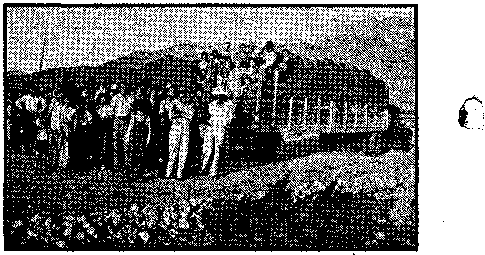
They got there, just the same
On Friday before the convention, Kingdom ■ Hall was announced to the public as the conyention point, and then began intensive advertising with silk-screen signs, stenciled signs on . cars, six signboards, 6 feet by 10 feet, on main highways, posters, handbills, banners, word of mouth, personal letters and information marches. Then came newspaper reporters and cameramen to Kingdom Hall and there followed a steady stream of pictures and favorable publicity that was undreamed of.
. At the beginning of the information marches a number of the publishers were arrested, but while they were held a telegram came to the mayor from the American Civil Liberties Union, requesting protection of Jehovah's witnesses. The publishers were immediately released, and the chief of police, whose sister is a witness, took a firm stand for our lawful rights, and from then on, throughout the convention, police officers were, on duty just outside the grounds, sometimes as many as six patrol cars on hand to keep order and prevent violence. Because of threats made prior to the convention, our own watchmen were maintained on the convention grounds night and day.
El Paso was the only' Spanish-American Convention, and many of the Spanish brethren came long distances to attend' At least 100 brethren from the interior of Mexico planned to come, to El Paso, but strict immigration regulations in effect July 1 made it impossible. One witness came from Mexico City> but was turned back at the port of entry. The Mexican witnesses had their own hall on the convention grounds, equipped with their own sound system, signs in ’Spanish, their ownushers, and several capable pioneers conducted the Spanish meetings with almost an exact duplicate off the English program.'The Spanish joined in’listening eagerly to the key city program, following which, translation was made for those not understanding English. A large percentage of the people in this country speak Spanish; so this was a happy event for these people of kind heart and good will.
On . Saturday, 24 Theocratic ambassadors were jailed at Tuas Cruces, New Mexico, for violating a musty handbill ordinance. Bail was arranged and they were released Sunday . noon, just in time for the public meeting. Immediately after the closing words from the key city, these witnesses stepped to the platform in a body and each gave a few brief remarks concerning their arrest. The Las Cruces
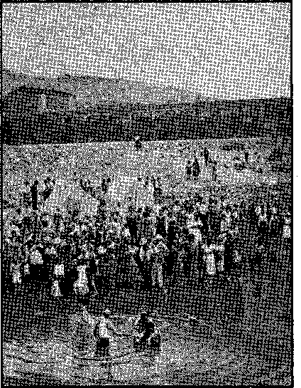
Immersion at El Paso '
Sun-News published that day carried exten-hive front-page stories, and an editorial quoting much from Dividing the People. The next day these Theocratic ambassadors stood individual trials, giving a marvelous testimony for the name of Jehovah for nearly six hours. Regardless of a prejudiced, hostile Catholic city attorney and a shameless police officer, the judge dismissed the case, and with tears in his eyes shook hands with every one of the defendants. As witnesses left the court they grinned as they noted atop the City Hall three large crosses—symbol of intolerance. Headline publicity was given in both El Paso and Las Cruces newspapers, especially as a Baptist clergyman, head of the Las Cruces Ministerial Alliance, voluntarily appeared before the court in favor of our‘lawful rights.
„ Sunday the convention witnessed the baptism of 94 who had taken their stand for The Theocracy. Sixteen of these were Spanish, and five colored. The peaceful Rio Grande, which separates two great nations, was the appropriate setting for this baptism.
The El Paso conventioners sent these telegrams to the key. city convention: (1) ’’El Paso conventioners send Theocratic greetings to Detroit convention. Message thrilling.” (2) “Program reception and enthusiasm perfect. New phonograph marvelous.” (3) “Enthused with Theocratic resolution and will join in distribution. 24 arrested at Las Cruces released to hear afternoon talk; trial tomorrow.”
Fargo, North Dakota
* rOHE Chamber of Commerce wanted the 1 convention to come and was a great help in securing the Fargo Auditorium. They knew the convention would be a good thing for the city. A deposit of $50 was paid on the contract. The Roman Hierarchy brought pressure to bear, through Catholic businessmen, and the contract was canceled. A Jewish banker, misinformed, helped the Catholic cause along.
Fargo had a wonderful witness for the truth. Great quantities of the Fifth Column booklet’were put in the hands of the people. Petitions were circulated. One lawyer made the remark, “These Jehovah’s witnesses are busy people. This is the fifth time in the past - week or so that they have been in my office.” When face to face with the issue the Catholic businessmen who caused the cancellation of the contract did not have the courage to read the Fifth Column booklet. Each was presented with a copy, but all returned them unread. What can be done with people that absolutely refuse to have their eyes opened, but go blindly on in the way of darkness and death, and love to do so?
But one man did seem to have his eyes opened. The Jewish banker above mentioned read the booklet and expressed his regret that he had been made a cat’s-paw by those who had dragged him into the controversy; he was sorry he had permitted his name to be used. He now seems favorably minded regarding the Kingdom.
The influence of the Hierarchy and the newspapers under its control made it impossible to get another auditorium in the city. Selfish interests dominate the city, but their efforts / caused Jehovah’s name and purpose to be better known in Fargo than ever before in its history.
Fort Worth, Texas
FORT WORTH, Texas, put up a manly and prolonged fight for a convention, and thus made a grand witness for the Lord and against the Devil. The Chamber of Commerce did not want the convention, and said so. The excuse, quite probably truthful, was that another convention would be on at the same time and take all available hotel space. Two auditoriums were engaged, one for Sunday and one for other days. Both were canceled. The Roman Hierarchy has Texas in the nut-cracker.
When it became apparent from newspaper abuse that Jehovah’s witnesses were in the furnace, the “Reverend” J. Frank Norris, notorious Baptist preacher, who once killed a man in his study, offered the free use of his great auditorium. A condition that he made was that at the opening of the convention his musicians would play “The Star - Spangled Banner” and Jehovah’s witnesses would sing it. The Society’s reaction to this proposal is worth reading. It was:
It may be that Dr. Norris would very much like to see us run out of town and is just waiting to set a trap. You know him better than, we do, but if the statement [that he would be the first one to run them out if they did riot sing] is true he would be the first one to run us out of town, as we wouldn’t stand up and sing on his direction; then we wouldn’t want to have anything to do with him.
In the midst of his efforts to get the convention to Fort-Worth* and thus bring a great blessing to the people of that city, the corii-pany servant in the city was arrested, beaten by the police, called vile names repeatedly, and kept all night in az>cell without any charges being preferred against him. Some police! Some city!!
Great Falls, Montana
THE Great Falls Chamber of Commerce was enthusiastic about having the Watchtower convention held in their city, and with their co-operation the Civic Centre was obtained, but, after allowing work on behalf of the meeting to progress for two months, suddenly canceled the Contract.’The witnesses did not take this lying down. They circulated a petition similar to that regarding the Columbus Convention, obtained 1,500 signers, and presented it to the City Coqncil as a witness against them.
Jackson, Mississippi
THERE are four preacher-incubators within 25 miles of Jackson, and these make it one of the most intolerant cities in the south. Most of the graduate preachers can find no jobs. The Catholics, though small in numbers, are trained in mob leadership and have influence far beyond their actual membership.
A contract was made for an auditorium in this city and all preparations were well under way when 50 men invaded the leased building, destroyed several hundred dollars’ worth of property, and demanded Jehovah’s wit-~nesses leave town by 5:00 a.m. the next day. At the time set, the mob (Legionnaires) reinvaded the property and forcibly drove the occupants out of the state and across Louisiana. In this long drive these men that style themselves Americans would not allow even the women or children to use toilets or to „ obtain food.
, No protection was offered by governors, district attorneys, sheriffs, mayors or chiefs of police in Mississippi or Louisiana, and, though the matter was reported to the United States Government the day it occurred (June 27), nothing had been done in the way of indictment of wrong-doers two months after the outrages occurred. These “patriots” of Jack' son, Mississippi, must have read about the way Hitler transported Poles across their own country. Indeed, they are Hitlerites at heart and only waiting the opportunity to get into full swing and destroy all in America that makes life worth, living. Religionists, of course, are behind them, and probably with them, in this effort to end Christianity in Jackson.
Kansas City, Missouri
WE moved into Ivanhoe Temple on Tuesday afternoon, July 23, and immediately set to work installing the sound equipment which was to bring us the various lectures from Detroit. Territory desks, book room, information booth, room assignment desk, check room, the various field service departments, cafeteria, etc., were set up ready to begin operations early Wednesday morn-
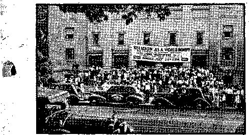
Ivanhoe Temple, Kansas City
ing. The brethren who installed the sound equipment did an excellent job; and although they didn’t get started until Tuesday afternoon; everything was in readiness by nine o’clock the following morning, in time for assembly for field service.
Everyone who had a part in making preparations for the convention put his shoulder to the wheel 100-percent and the various departments were all ready to go with the beginning of the convention.
Although there were quite a number of witnesses, early arrivals, who assembled for field service the first morning, many of them continued to come in on Wednesday, and on every day of the convention. No difficulties were encountered in the field the first day, and considerable advertising work was accomplished.
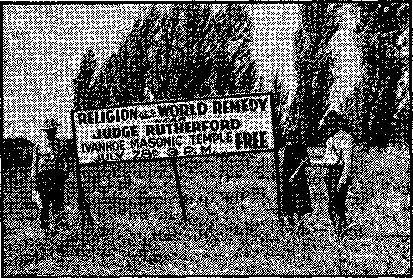
A “sign of the times” ,
However, on the second day one of the publishers and his wife were picked up by the police for distributing handbills without a permit in the downtown section of Kansas City. Although they were held under $25 bail, the police finally released them with the remark they were sorry it happened, especially during the convention.
The advertising and witness work increased each day up to the day of the main lecture from Detroit. Two of the publishers were sent to a near-by small town, since sound-cars are prohibited in Kansas City, and upon informing the mayor of their intention to advertise 1 the Sunday lecture the mayor informed them he did not care to have them use the soundcar in that town, as “it is just a damned nuisance”. '
Another sound-car was sent to Olathe, Kans., near Kansas City; and as the publishers were finishing their work of advertising and plae-
ing placards in store windows in the town a crowd of Legionnaires came up arid demanded the publishers “get out of town” at once. However, as the publishers had not quite finished their work, they did not “run for cover”, and the men proceeded to tear the signs off the sound-car and they then escorted the publishers to the city limits. . , , .
Another publisher was picked up by the police in Kansas City but was released after they had questioned her.
Other than the instances cited above there was no trouble experienced in. the field.
■ However, as the day for the big lecture drew near considerable pressure was brought to bear \ on the custodian of the Ivanhoe Temple; but he remained steadfast in his refusal to “put those Jehovah’s witnesses out” into the street.
. The custodian listened to the various lectures rind made the remark, “It’s too bad everyone can’t hear these talks.”
The witnesses were ready for any trouble that might develop at the auditorium, as there were more than a hundred husky brethren equipped with canes, on which were inscribed the words “J.W. Theocratic Convention, 1940”. Although the canes made very fine souvenirs, they would also serve another very good purpose if need be. No trouble whatever developed at the auditorium, however, and the lectures all came through perfectly.
The stage at the Ivanhoe Temple was decorated with a huge American flag as the background for the speakers and the year’s text, which elicited some comment from some of the skeptics who said Jehovah’s witnesses would “tear down the American flag if it were raised at their meeting”. We were able to get a very .nice story in the Kansas City Times which 'played up the large flag use J as a backdrop on the stage.
It seemed there was a new thrill and surprise every day of the convention; for, after the new phonograph was presented, everyone rejoiced on the following day when the new book, Religion, was released, and then again on Sunday we had another surprise when Kingdom News No. 6 was released.
The’ following telegrams were wired to Detroit: (1) “The lecture came through very . clearly; everybody greatly enthused over discourses given, especially Brother Rutherford’s. Large numbers out in field this morning. Everybody thrilled to be at this great first Theocratic convention at Kansas City.” (2) “Discourse by Brother Heath thrilling beyond
words; new phonograph received most enthusiastically; give all praise to Jehovah.” (3) “Brother Rutherford’s inspiring message gave us much joy. Also the new book Religion is a welcome weapon. We pledged to do our best to put therii in the hands of the people of good will, come what may. Lecture came in clear and distinct; every one stood up to affirm the resolution.” (4) “Brother Rutherford’s lecture « and all other portions of program very clear C and distinct. Resolution adopted with heartfelt enthusiasm. Every one deeply touched by impromptu speech of Brother Rutherford.” There was also a dispatch from near-by Altus, Oklahoma, reading, “Not all there in person, but 100-percent behind The Theocracy and your [Judge Rutherford’s] message to. be given SundayMay Jehovah give you added strength.” ’ . '
Lincoln, Nebraska
HE Liricoln Chamber of Commerce said they would be very glad to have the convention come to their city. 'J'hcypaid a visit to. the State House and arranged for the use of the Fair Grounds auditorium. This was on April 21. On July 5, without any explanation of who had put the heat under them, the State Fair Board canceled the agreement and tried to shift the responsibility to the Chamber of Commerce. Particulars as to just what religionists jn lace skirts put the scare into these politiciaris is awaited with interest.’ What' a story this will be when it is all brought to. light, as it will be! “There is nothing covered, that shall not be revealed; and hid, that shall not be known.”—Matthew 10: 26.
Long Beach, California
HIS is an American city, a convention city, run by Americans, and not by representatives of the cult operating out of Rome. There was some effort by these and other gangsters posing as patriots to prevenri the convention from being held; but it was held, and was a great success from every point of view, with • no disturbances of any kind. Some of the Lo,s jS Angeles newspapers gave garbled and distorted news from various individuals and veterans’ associations which served a good advertising purpose, even if not so intended.
The American manager of thfe magnificent civic auditorium showed that he could not be moved. He appeared before the council when pressure was \ brought on them to break
w,, . । ’ , ■
t?: . • ;
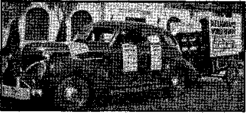
Use for a trailer
the contract. He is a credit to the city he serves so well. - \ •
. The 197 ushers handled the crowd nicely. There were 12 musicians in the orchestra. 277 patients made use of the convention hospital. The cafeteria was excellent.
The advertising in the territory, adjacent to Los Angeles was strenuous and well rewarded. Enormous quantities of handbills were distributed; 6,000 personal invitations were mailed to the interested. Favorable news releases were published in many papers. There were 100 silk-screen signs 4 feet by 6 feet placed in meeting halls and trailers in the vicinity. Window cards were shqwn in stores all over town. Placards 22 inches by 26 inches were on every bus in Long Beach.
There were 64 automobiles stenciled with water-color signs, and as they went at 20 miles an hour through town, with all their lights on, and with radios turned on loud, and tooting their horns, markets were emptied and everyone came running to the curb to see what it was all about. Result: advertising.
A picture is shown of some of the 324 being immersed; also of a two-wheeled trailer that was put to good use. The driver of this car cruised all day with it, with all lights on and radio going, and attracted much attention.
Telegrams from Long Beach to the main convention at Detroit were: (1) “Reception , perfect; message received enthusiastically?’ (2) “Reception clear; new surprise weapon and demonstration received joyfully. All fully agree with message exposing America’s real enemies.” (3) “Message clear and emphatic; new weapon real surprise.” (4) “Message clear, distinct and thrilling. Everyone determined to co-operate with The Theocracy.”
Medford, Oregon
fEliOVAH’S witnesses at Medford, Oregon, pushed on in preparation for the convention in that city in the face of constant opposition; but, since their King, Christ Jesus, endured contradiction and opposition of sinners, Uis followers and subjects are glad to endure the same.
The Medford Armory was obtained for the convention, but then the first big difficulty appeared. The Armory was large enough to seat 3,000 persons, but it had only 500 chairs, and some benches in the balcony. The local school board had plenty of chairs, but- the newspapers were crying and lying about mob action, and indirectly encouraging it, so the school board was afraid the chairs might be damaged, and would not co-operate with' Jehovah’s witnesses, even as they would not have co-operated with Jehovah’s chief witness, Christ Jesus' An effort was made to rent chairs out of town, but it was found , that those owning the chairs would not permit them to be taken out of town, or the cost of shipping them would be prohibitive, an effort having been made to get chairs in - Portland, 312 miles away!
Jehovah’s witnesses decided to make their own seats, and fifteen or more of the Medford company worked for over a week to produce benches arid other furniture for the barnlike structure. After all, Jesus was born in a stable, • and apparently His people can expect the same treatment that was accorded their Master. One hundred pine benches were built, and, in addition, ten benches and five tables for the cafeteria, two cafeteria serving tables, territory, book-room and check-room counters and racks, a speaker’s stand, and, for good, measure, thir-. ty large highway signs.
The Devil, seeing the determination of the Lord’s servants, then got busy. The Chamber of Commerce withdrew permission for the public display of the large streamer signs. Places were found elsewhere for five of them. One of them, hung from the trees at the Armory, was cut down by a policeman. But the advertising went forward, by means of handbills, special recordings, sound-cars, signs on automobiles, ' and signs along the highways in/prominent locations. Some newspapers carried items about the convention.
Patrioteers, influenced by Hierarchy agents of the Roman Catholic Cult, threatened to destroy the benches when they were moved from the garage where they were made to the Armory. - -
It was known that we could not obtain possession of t|ie Armory until ten o’clock Tuesday night, with the convention opening the
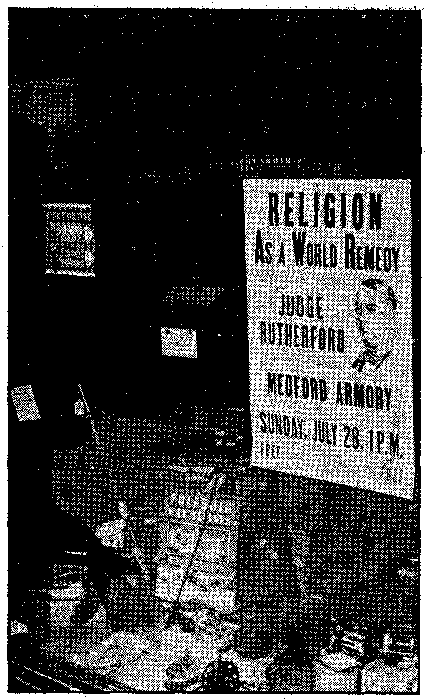
Well-placed sbow-window ad
next morning. The enemy planned to interfere with . the. moving Tuesday night, under cover of darkness, their ally. But permission was obtained from the captain and sergeant in charge of the Armory to move the furniture into the basement of the Armory. Five trailers and a pickup were used to transport the furniture, and it was all safely stored in the Armory basement before dark Monday afternoon.
When teh o’clock Tuesday night came, when the Armory was released for use by Jehovah’s witnesses, they really went to work. The main floor, the stage, the stairs, the basement and everything were thoroughly swept. Chairs were set up, and the handmade furniture brought up from the basement and put in place. Still more trucks and trailers brought other benches from near-by companies. Cafeteria and dining rooms were put in order, equipment brought

Placards and sign. Medford.
in and preparations made to serve breakfast the following morning. Much of the cafeteria , equipment was loaned by friends, some was ’ bought new and some secondhand. By dawn preparations were almost completed. The stage was decorated; the large banner with the year text was up. Signs were in place all around the auditorium. .
From the time of the opening talk to the last discourse, the whole' program went smoothly. The reception of that part of the program relayed from the key city was excellent. The new vertical phonograph was demonstrated and its appearance gave rise to many expressions of thankfulness to Jehovah for His wonderful provision for His servants. The new book, Religion, was likewise received with joy'and with ' determination to speedily carry this message from the Lord to the people of good will, without regard to cost. ' . .
Telegrams: July 24> “Reception good. We rejoice with you in His Theocracy.” July 25: “Thanks to Jehovah for clear demonstration from Detroit.” July 27: “Greetings to Jehovah for this message. Greetings-to all attending the key city.” July 28: “Lecture excellent. Jeho- ' vah’s rich blessing be yours as we rejoice with all. 128 immersed.”
Memphis, Tennessee
ON May 13 the Auditorium and Market Commission of the great city of Memphis accepted $50 down payment on the Memphis Auditorium for the convention of Jehovah’s witnesses to be held July 24-28, and allowed the witnesses to go ahead and spend thousands of dollars for handbills, phonograph records and a huridred other items that go to make up a convention. And then on July 1, with the convention only three weeks away, returned the money by registered mail, stating that the Auditorium could not be used on
that date, as repairs were being made which would prevent it. At the time of rental this matter of repairs had been thoroughly dis. cussed and the Commission bad stated the . repairs would be all finished two weeks before the convention date. On July 5: 7
Mr. McElravy emphatically denied any knowledge of pressure being brought to bear by selfish religious or other organizations to keep us from j ' using the auditorium. According to a framed card , . on the wall of his office he is a Legionnaire.
Three days later, when told firmly but kindly that Jehovah’s witnesses were aware of the unjust and false accusations made against 1 them, and that pressure had been brought to bear upon him to refuse the use of the Auditorium, he did not attempt' to deny it.
The influence of the Roman Catholic Hierarchy is destroying all the manhood of American businessmen. Most of them now are willing to lie and squirm out of any promise or covenant they make,. if only they can please the great international religious "harlot” of Revelation 17:1-5.
Montgomery, Alabama
VERY similar to Memphis, Tenn., which see. The excuse here, however, was that the Ministerial Association would have to approve Jehovah’s witnesses. This is like asking , the Devil to endorse Jesus Christ. This cowardly move was made On July 3, and was beneath contempt. Contract was canceled six days later.
Philadelphia, Pennsylvania
TT IS a far cry from William Penn to the . 1 modern city fathers of the "City of Broth-
/ erly Love”. They have so much love there now that it is no trouble at all to bow deeply to the will of the Roman Catholic sect. Of course, one need not hate Catholics, but why let a bunch of Italians in Rome, through their unAmerican henchmen in this country, run the . city founded by William Penn?
. But such is the case, as appears from this letter, a letter which William Penn would have । blushed to see and refused to endorse: ' ; July 9, 1940.
. Mr. N. H. Knorr, Vice-President,
Watchtower Bible and Tract Society, Inc.
' , 117 Adams St., Brooklyn, N. Y.
Dear Mr. Knorr:
Mr. Aken called this afternoon to request that I mail you a copy of the resolution of the Board which I gave you over the telephone.- ■
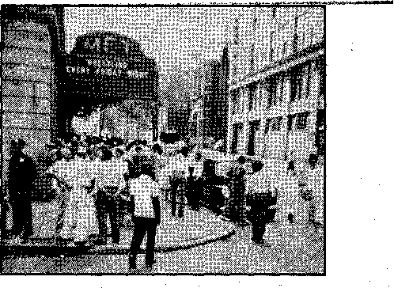
Philadelphia convention hall
The Resolution reads:
, “Be it Resolved, that the Board of Trustees deem it not in the public interest to approve the application of Jehovah’s witnesses for the use of the Convention Hall, July 24 to 28, 1940, inclusive.”
Yours very truly,
- Edgar S. McKaig,
~ , President.
Since that was that, the Metropolitan Opera House was obtained. There was objection to the witnesses’ using that place, also, but the manager had a little more of the spirit of Penn, besides having a backbone. He received a call from some backer of Rome, who said, "Why don’t you get someone in there who will salute the flag?” Mr. Spillman replied, "The flag is still flying; and furthermore, I
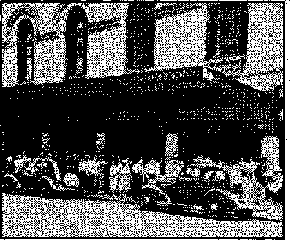
Crowds enter hall at Philadelphia
don’t have to go to Vatican City to find out who to rent this hall to.”
Beautiful words. Wonderful words. .
t Preparations for a convention in Philadelphia had to be made on short notice; and a good job was done. Philadelphia was originally considered for the central convention, but as the Republicans were having a convention there not long in advance of the dates scheduled for the convention of Jehovah’s witnesses, Columbus was made the key city, and when, later, the Hierarchy-superintended wave of Roman “patriotism” (it certainly wasn’t American) turned upon Jehovah’s witnesses and caused the cancellation of the Columbus Fair Grounds, Philadelphia was once more considered, as per above, and with the noble (?) results indicated in copy of letter from the board in charge of Convention Hall.
The city of Philadelphia became bne of the many cities, nevertheless, in which’ extension conventions were held. Connected with the key city, the convention was a real blessing to those unable to attend at Detroit.
In the course of the convention a badly damaged sedan parked almost in front of the entrance, with four men in it who’ seemed to be badly hurt, being bandaged up pretty thoroughly. Inquiry revealed that they were an unfriendly bunch, apparently bent on making trouble. phe police w$re advised, and the car drove off with police ear following. .
Another incident was the appearance of a woman, obviously drunk, wearing signs advertising Judge Rutherford’s lecture. She disappeared quickly when she was approached by some of Jehovah’s witnesses, but was later seen talking to an officer, admitting to him that a priest was paying her to stage her little act.
Magistrate Thomas A. O’Hara (guess his religion) put one of Jehovah’s witnesses' in jail for thirty days because.of advertising the lecture, his right. Arrangements were made for release and in the course of his dealings with the witness’ attorney O’Hara said, “If this work continues, there’s going to be bloodshed over it! There are enough of us here to stop it and we. ape going to put a stop to it.” (That’s what he thinks.) ,
Telegrams from Philadelphia to the key convention indicate that they had a blessed time. They are: '
July 24. Thrilled with opening message of the Theocratic Convention from Detroit. May Jehovah continue to bless all sessions.
July 25. Program' greatly enjoyed by all here in Philadelphia.
July 27. Thrilled with the message “Times and Seasons” and the new bookReligion.
July 28. AU here joined in thunderous applause. All ready for the Theocratic fight.
Pueblo^ Colorado
HE Chamber of Commerce invited the Watchtower Bilfie and Tract Society to hold its convention in Pueblo. Mr. Saxton, city commissioner, agreed to rent the Memorial Hall (city auditorium) and said that nobody could put enough pressure on him to make him back out of an agreement. At the time of making that statement he did not know the Roman Catholic Hierarchy as he does now. He said they had even let the auditorium to Communists and certainly would not deny it to Jehovah’s witnesses.
After two weeks he stated that the receipt he had issued'was as good as any contract, and he gave his word of honor the witnesses would have the auditorium- But the pressure had begun. A committee of war veterans had visited him, protesting. He admitted that in these organizations there is an inner circle as was the case in Holland, Poland, Norway and Belgium. He wanted these under his eye where he could keep track of them. He did not say who they were. It is' always the gang.
Two weeks later a committee of five called on him demanding that the contract be canceled. He said he saw ho reason to do so. He had read Judge Rutherford’s books and not found in them anything whatever against the American government. A Legionnaire, head of a district school board, called a meeting of teachers and said he would see that the contract was canceled- The newspapers began to bay and bark and whine. Attorneys began to take a hand.
Ten days more and the newspapers were filled with propaganda and refused to print the truth. Mr. Saxton said Legionnaires had threatened to bring a thousand steelworkers to the auditorium and . break up the meeting with stink bombs. (They wouldn’t need to bring anything; just walk in.) The entire town was in a furore. Such Legionnaires as are true Americans backed up the witnesses; the radical element in their ranks, controlled by the Hierarchy, set the passions aflame..
Two days more and Catholic Action had this American town licked to a finish. The commissioners admitted and had to admit that a law-
less element which they did not name had made threats which pad them all frightened, but, according to their own words “no patriotic organization had made any threats; no organization had made any threats*’. The net result was, after Catholic Action had stirred up every organization in the city, the case was won for the pope and America was out in the cold. Cancellation of the use of the city hall' followed as a, matter of course.
. St. Paul, Minnesota
THE convention at St.' Paul served a wide area in the Northwest because of cancellations at Fargo and Sioux Falls. Jehovah’s witnesses and companions assembled from Minnesota, Wisconsin, Iowa, North Dakota, South Dakota, Montana, as well as a few, who were successful in getting across the border, from Canada. A pioneer from Montana went to Sioux Falls to attend the Theocratic convention. Finding that it had been canceled there, she went to Fargo. That had also been canceled; so she came on to St. Paul hoping to' find a convention here, which she did.
The Devil put every obstacle in the way to prevent the obtaining of an auditorium. At first arrangements were made to use the St. Paul Municipal Auditorium, and negotiations to this end were carried on, but in a final showdown, in a meeting of the city council, the officials plainly stated their opposition to Jehovah’s witnesses and the Theo'cratic convention. The mayor stated that we might precipitate a riot and damage the auditorium, 'and that our record was against us; the city attorney said that he himself would start a riot if anyone brought him more literature like some he had received from Jehovah’s witnesses. (Both these gentlemen have since lost their jobs.) Next, arrangements were made to use a portion of the State Fair Grounds for the convention, and a contract was drawn up for the same. About a week later, the newspaper accounts of the Texas and Maine riots against Jehovah’s witnesses appeared, and the Fair Board canceled the contract on the ground that our refusal to salute the flag would probably result in violence and damage to the State property. Finally a contract was made for the use of a private hall, the manager of which was willing to stand up for the principles of freedom of worship and assembly. He was fully advised beforehand of the nature and source of the persecution that has been brought against us, and of the fact that he could expect plenty of pressure from the Hierarchy when the advertising of “Religion as a World Remedy” was begun.
Adopting its usual tactics to prevent honest people from hearing the truth, Catholic Action began “turning the heat on” the hall manager soon after the convention began. Pressure was also brought through the insurance company from which the manager leases the building. Even in Minneapolis a Catholic priest called the head office and insisted that our meetings be canceled. This pressure was in turn transmitted to the manager, but, even though he was frankly concerned about the threats of disturbance, he refused to bow even to the demands of his landlord, and stood firmly by his contract. Saturday night he told some of his friends, “They turned these people out of every place else in town; we’re the only ones who had the guts to take them in, and they’re the finest people we ever had in this hall.” The day after the convention closed, he called the head office and reported, “Well, the building is still here, and we’re all still alive. I told you that these people wouldn’t make any trouble, and besides, that we have a police department in this town that’s out of politics, and really on their job.” He also told one of the witnesses, “I have been reading the book Religion, and it looks to me like what you people have is the real thing. When I’ve finished this book I’m coming down to your hall and get the rest of the books.” ,
The police department in St. Paul co-operated fully in providing police protection (mostly plain-clothesmen) during all sessions of the convention. Chief of Police Haekert told us that as long as our meetings were legal he would see that no unlawful interference was permitted; and he kept that promise fully. Here was a man who appreciated the real American principles of liberty, quite in contrast to his superiors at the City Hall. At his suggestion a copy of the convention program was also sent to the head of the Federal Bureau of Investigation in St. Paul before the convention opened, so that he would understand the cause of complaints which he would undoubtedly receive from those opposed to the free proclamation of the truth. Jehovah’s blessing was upon these arrangements, and not even a hint of interference with our meetings was experienced during the whole convention.
Good publicity was given the convention during the first three days by the local newspaper. The first announcement gave, a very fair presentation of the stand of Jehovah’s witnesses on the questions of flag-saluting and neutrality. However, no account was carried of the very extensive witness given by the lecture “Religion as a World Remedy” or the advertising in connection therewith.
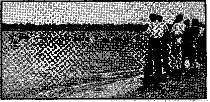
Immersion in Lake Phalen
The reception of the lectures from Detroit was uniformly excellent. The demonstration of the new phonograph on the platform here simultaneously with the announcement from Detroit was greeted with unrestrained enthusiasm and expressions bf appreciation. This provision of the Lord for the final march around Jericho is surely an exhibition of His favor upon His people. The phonograph was thereafter demonstrated regularly in the book room, where it remained a center of attraction throughout the remainder of the convention. The announcement and release of the new book Religion for this final campaign was another big surprise, and filled all with joy. This book was also taken eagerly by the public after the Sunday lecture.
The immersion was conducted in the beautiful setting of Lake Phalen. The youngest of those symbolizing their consecration was 8; the oldest, 80.
The Sunday lecture by Judge Rutherford was the high point of the convention. An audience of 1,850 included capacity crowds in the
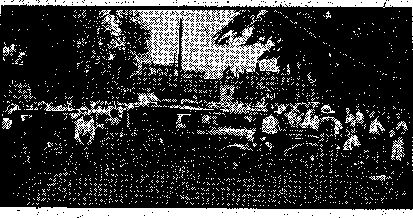
Overflow crowds hearing lecture at St. Paul
two main halls and in the two dining rooms, as well as several hundred who stood outside around the sound-car. Everybody, inside and out, listened attentively to the entire program, brought from Detroit for more than an hour and a half. All joined'enthusiastically in adopting the resolution presented a,t the conclusion of “Religion as a World Remedy”. Then we were further thrilled to hear Judge Rutherford’s voice again bringing us words of counsel and encouragement to stand fast in the fight. A large American flag hung at the front of the auditorium served to illustrate his remarks on our attitude toward the flag. Then another surprise with the announcement of the new Kingdom News. Surely Jehovah’s table has been spread before us in abundance.
Telegrams to the main convention at Detroit were: (1) “Greatly encouraged by Brother Rutherford’s ringing declaration of our stand; excellent reception throughout.” (2). “All thrilled beyond words with new phonograph. Will continue march around Jericho.” (3) “All Theocratic ambassadors join you in adopting resolution after Brother Rutherford’s forceful delivery. May Jehovah grant him strength to continue. Intense pressure On hall .owners by Catholic Action successfully resisted.” (4) “Main auditorium and three overflow halls packed. Hundreds stood around sound-car outside. We deeply appreciate perfect reception of entire session, including Brother Rutherford’s closing remarks. Religion going fast.”
San Antonio, Texas
EVERYTHING was going well for a convention in San Antonio; the rental of the Auditorium had even been reduced from $675 to $445, a reduction of 33| percent, when the storm broke in Texas (inaugurated by the lying United Press report sent out from Del Rio). June 4, Mayor Maverick, who had previously let the Communists have the use of the Auditorium, canceled the contract and the Au-' ditorium manager stated that if the witnesses went ahead with the convention Jehovah’s witnesses would be in great danger of losing their lives. The witnesses were quite willing to do that, and made special legal efforts to enforce the contract, but all to no. avail. Mayor Maverick, who stood by the Communists, was not willing to stand by honest, upright Christian people—not when he knew that the Roman Catholic Hierarchy is after their scalps.
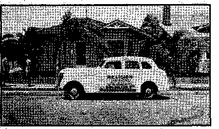
Advertising the lecture
San Diego, California
WE had some difficulty in engaging a suitable hall. With, the help of Jehovah we succeeded in getting one of the finest ip tpwn. The management of the Plata Real stated that “Jehovah’s witnesses are the cleanest people we have, ever had in this hall. We are glad to have had., them here. We hope to have them here again sometime.” The San Diego company furnished the management with a copy of Religion, for which they expressed gratitude and appreciation.
Many came from Arizona and all parts of southern California. We'were gratefully thrilled with the speeches that came by direct, wire to the Plata Real U. S. Grant Hotel. Opr reception was perfect. /
Some attended in ipilitary uniform. A sailor boy was greatly stirred with the message. He saw his course of action was wrong and immediately took action to get himself straight with the Lord. He symbolized his consecration and asked his commanding officer that he be released from the Navy upon the grounds that I he had now covenanted to serve Jehovah and he could not serve both God and mammon. He further gave his commanding officer the booklet Neutrality, stating it expressed his position and that he makes application for discharge from the Navy upon the grounds set forth in Neutrality. - .........
Many of the pioneers enjoyed their local convention home at a little pioneer camp a few miles out of town and on a plot of ground provided by one of the brethren.
... In advertising, many of the cars of our brethren were painted entirely white and on the sides and rear we gave information concerning convention and public speech. The Society’s sound-car advertised it in all the rural territory. About 300 publishers, ranging from 5 to 85 years, engaged in information marches; and while some “black crows” gave us dirty looks, they were unable to exert enough influence to cause any trouble. We succeeded in advertising Judge Rutherford’s speech on the , streetcars; even the Catholic priests had to ' ride on cars that were carrying our signs.
The buses also carried our signs. Even though we ordered 30,000 handbills, we could have used more. Many of the newspapers published our news releases word for word, but very little was said in the papers about the convention.
■Sunday was the big day. Judge Rutherford’s ' speech came over from 12 noon. At 11: 30 people began to fill the hall. By 12: 00 all seats were filled. It was necessary to engage an overflow hall, and that too was filled.
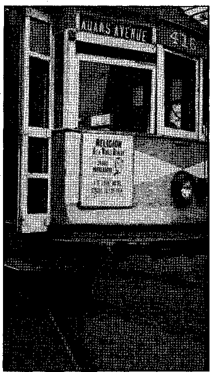
Advertising on trolley car
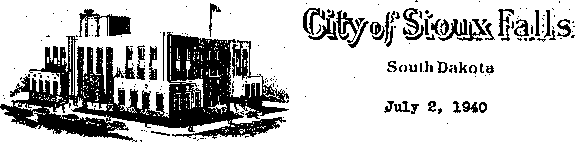
ADMINISTRATION building '•
Mx*. Stevens Poole
Davis, South Dakota ' ' “
Dear Sir: — .......
Recently you made application to the manager of the Coliseum, a public building owned and operated by the City of Sioux Falls, for the use of such building from July 24th to July 28th for the holding of a meeting of the organization known as Jehovah’s.......
Witnesses. At that time the manager accepted a deposit of $35 on the rental charge but with the reservation that if it should develop that the holding of such meeting would be contrary to the public Interests, the permit to use the building would not be granted and the deposit would be returned.
During the last several days numerous objections have been received by the manager of the Coliseum arid the City officials to the holding of this meeting by such organization. These ob~ jections have been made by representatives of various patriotic and veterans organizations and by other religious groups, which groups claim to have been subject to attack by representatives of Jehovah’s Witnesses.
Today the members of the City Commission met with the manager of the Coliseum, the chairman of the Veterans Council of the .........
City, and representatives of the Federal Bureau of Investlga-tion. At this meeting the group considered various newspaper 7 and magazine articles relating to similar meetings of the Jehovah’s Witnesses. In particular it appears from the article in TIMS MAGAZINE for June 24, 1940, at page 54 that similar meetings of the organization have(incited riots and mob violence in various communities. The groups also considered the recent decision of the Supreme Court which sustained a school board in the expulsion of a child belonging to or instructed by Jehovah’s Witnesses who refused to salute the flag. Due consideration was < ' -2-
also given to the fact that at this particular time- In our his- . tory the complete loyalty of all our*people is demanded, and there is deep-seated feeling among bur citizens about anything in the nature of disloyalty to the government.
All of this led the group to (the conclusion that if such meeting is held as scheduled, there is grAve danger of public disturbances threatening to cause personal injuries and also damage to the public property.
Under the circumstances the City Commission, acting with the manager of the Coliseum,, determined that the permit to hold the meeting of Jehovah’s Witnesses on July 24th to 28th shall be granted only on condition that a $50,000 bond be posted to cqver ' any damage to the Coliseum property in which the City has an investment of more than a quarter of a million dollars, and on the further consideration that there be paid to the City the sum of $1,500 with which to pay the cost of adequate police protection during the time of the holding of the convention. It is required that these conditions be met promptly and not later than July 10th and if not met by that time the deposit of $35 will be returned and permission to use the building will not be granted.
I am sending a copy of this letter to your attorney, Mr. N. B. Bartlett of Lennox.
RDB:J3
Sioux Falls, South Dakota
THE Chamber of Commerce, so they said, “appreciate very much being given, an opportunity to co-operate in the’ arrangements for this meeting?’ Everything was .all fixed up for the use of the Coliseum and Jehovah’s witnesses relied upon the word of the mayor, who refused a down payment, that ‘if his word was no good the money would not hold pt’. . This turned out to be the fact. He made his promise on April 9, and on July 2, nearly three months later, when the Roman Hierarchy had been able to apply the heat to him, through numerous businessman, he had the city attorney cancel the contract and write as foolish a letter as any supposed lawyer ever wrote. The City Commission would carry out its contract, oh yes! But, Jehovah’s witnesses must post a bond of $50,000 and ipust pay the city police $1,500 for providing police protection. This unique letter is herewith reproduced.
San Jose, California
UrpHE convention in San 1 Jose was another evidence of the hand of the Almighty God in the affairs of His people, working to the end of glorifying His name.” So said the convention servant for that city. A year ago the San Jose Convention and Tourist Bureau of the San Jose Chamber of Commerce invited Jehovah’s witnesses to include San Jose when ar. rangements were made for the next convention. The Civic Auditorium was offered free for the purpose, and the
Chamber of Commerce stuck to the arrangement. ;
' Sometime before the convention opened the manager of the Auditorium was approached regarding the probability of mob violence. It was his thought that no violence would occur, but Jehovah’s witnesses nevertheless took precautions, trusting Jehovah to do for them what they could not do, but meanwhile doing what they could. There was no disturbance, though the manager had been threatened.
The first surprise of the convention, the new phonograph and its demonstration, was as joyfully received at San Jose as at Detroit.
1 The second surprise, the Author’s Edition of Religion, met with enthusiastic reception. The conventioners gave assurance that they would do their part in giving the country what it professes to need—more “Religion”.
San Jose conventioners had their own cafeteria, in spite of efforts to prevent it. A doctor in the Health Department made it clear that he would not permit such an arrangement if he had anything to say about it. He didn’t; for arrangements for his vacation took him out of the city at the right time, and a license for the cafeteria, was issued, without objection by those left in charge. As at Detroit, pioneers received their meals free, others paying for theirs at a reasonable rate.
There were 142 immersed at San Jose, and attendance at the Sunday public lecture on “Religion as a World Remedy” was heavy. The audience, including the public, manifested intense interest. Many expressions of approval were overheard. * '
One man remarked to a witness, “Your pamphlet says “Religion as a World Re'medy’ and your sign says the contrary. Please explain.” The publisher reminded him how Jehu' decoyed the worshipers of Baal into the temple of Baal, professing to have a “feast unto Baal”. “I get the point,” he replied.
Savannah, Georgia
THE Chamber of Commerce was delighted with the idea of a convention; sixty days later they were completely opposed to it. Many auditoriums' were contracted for, but all contracts broken, “repair” excuses and other expenses being manufactured to fit the occasion. - At length, at the last minute, an auditorium was engaged and the contract would have been fulfilled, but the mail was held in the Savan-, nah post office twenty-four hours, long enough to break the deadline and cause the abandonment of the convention in Savannah. It is stated that the employees in the post office at Savannah are 100-percent Catholic and that the City Council is completely dominated by this small minority. A report says:
City officials are mere tools of the Hierarchy. This was made manifest today. One councilman stated that the committee is always made up of two Jews, two Irishmen, two Germans and 6 Georgia Crackers. The first six always stick together and the balance act at their command. .
Seattle, ashington
JEHOVAH’S name and word have been further magnified by the convention activities of His people in the Pacific Northwest who assembled in Seattle, Washington, July 2428, 1940. Included in this assembly were fullblood American Indians, and natives of the Philippine Islands and Hawaii. Private wire from the key assembly of the Theocratic convention at Detroit, Michigan, brought to those assembled in the Seattle Masonic Temple all the main features with clear .and perfect reception, and with no interference whatever in the local auditorium.
Only a very few publishers were able to come from Canada, the majority being refused permission to enter, although local publishers made every effort to assist them across the border, even to guaranteeing their expenses 'while here. '
The management and entire staff of the Masonic Temple were kind and hospitable, Courtesy was extended by the police department of the city of Seattle in removing all parking restrictions around the building for cars that displayed banners advertising the Theocratic convention. Officers who were stationed in and around the building to direct traffic and maintain ofder had nothing serious to contend with. ,
Some of our billboard signs were mutilated or destroyed with tar, knives, stones, etc., and one night a stone was thrown through the window of the local company’s Kingdom Hall. A few ruffians who attended our meetings remained silent and caused no disturbance. _ . The “Jehu”, sound-boat of Seattle, plied'the waters of the Puget Sound area, testifying to thousands along the more than 193 miles of Seattle’s water front, not only by the sound equipment mounted on the cabin, but by the large sail upon which was stitched lettering
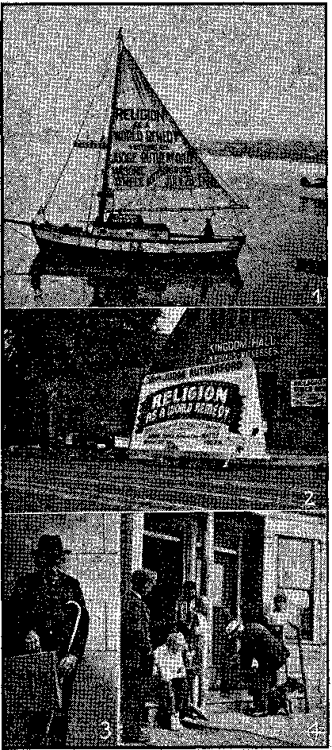
Seattle scenes: 1. Sound-ship. 2. Trailer and Kingdom Hall. 3. Blind pioneer with new phonograph. 4. Worker and goodwill listeners.
two feet high in three colors advertising the Sunday lecture.
Suitable rooms had been set aside in the Masonic Temple for departments which administered the various details of the work, and these' were furnished by the local witnesses as required for the book room, hospital, stenographic and filing department, field service, advertising, treasurer’s office, nursery, etc. The information desk, post office, and rooming desk were set’ up in the lobby.
Telegrams to the main convention at Detroit: (1) “Perfect reception; vowels, consonants true and clear.” (2) “May Jehovah’s name be glorified by new phonograph. Publishers overjoyed. Convention running smoothly. Speech was thrilling. Reception perfect.” (3) “Deepest appreciation to Jehovah for Brother Rutherford’s inspiring message clearly heard. Greatly enthused with new book: No interference.” (4) “Lecture thrilling; like great hammer pounding down walls of Religion. Packed to sidewalk. 117 immersed.”
Spokane, Washington
THIS convention, well advertised, moved smoothly. Only once was there any trouble. At the one time when the guards were off duty, i.e., at the time of the principal address Sunday, when all were in the auditorium, evil persons poured sugar into the gasoline tanks of four of the automobiles, in a<n attempt to wreck the motors. The attempt did not succeed. Police were friendly, having always, one officer bn duty, and on the last day several in uniform and in plain clothes, as well as a unit of the fire department, with their truck parked right by the convention building.
Here 124 were immersed.
A witness from Canada arrived at the con-, vention after trying for thirty days to get across the line. This was a grand surprise to all. He was given a place on the program.
When Judge Rutherford spoke of the evil work of the American Legion one man took his Legion card out of his pocket and tore: it up, saying, “If that is the kind of an outfit. I am associated with, I had better get rid of this.”
Just before the worst rainstorm experienced in years in Spokane, an opportunity was given to go out in an information march. Despite the storm, 125 volunteered, and by the time they were down town the storm had ceased. They did not get wet.
Tampa, Florida
THE Tampa section of the Theocratic con-r vention succeeded in having its meetings in spite of strong opposition from a motley
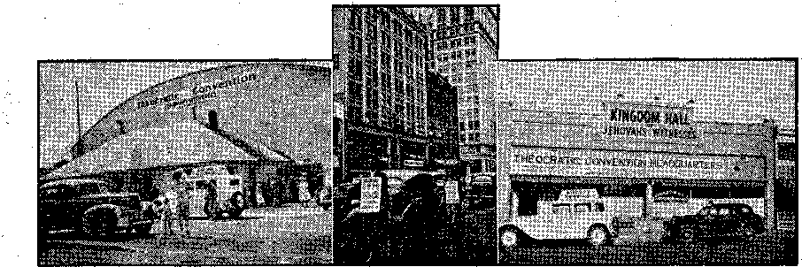
Spokane convention hall, information marchers, and Kingdom Hall
' crowd of pseudo-patriots. First a petition was circulated by a group of self-styled “Defenders of the Flag” that sought to have the use of the Municipal Auditorium denied Jehovah’s . witnesses. This outfit was headed by one W. J.
Doran. .
Next came the Centro Asturiano Club, a Latin health society. Manifesting the spirit of the Spanish dictator Franco, they wanted to stop anyone from using public buildings to attack the flag or from putting out literature on the streets attacking “the Christian religion”. Since Jehovah’s witnesses attack neither the flag nor the non-existent Christian religion, neither objection affected them. The Cigar Makers Union, realizing this, protested the Centro Asturiano’s action. Just to show his meanness the Devil (through his loyal supporters) arranged tp cancel the use to the regular zone assembly of the City Auditorium at Orlando. That complicated matters further. The Tampa Cigar Makers Union protested this also, and the local politicians quite naturally accused the Union of being Communistic, but ; falsely so. *
The Tampa Committee on Public Relations = of the Board of Representatives called a hearing on the protests for July 22. Those in fa' vor of stopping Jehovah’s witnesses from using the; Auditorium were the American Legion, the Centro Asturiano, a group from the Amer-k ican Federation of Labor, the Veterans of Foreign Wars, and the Defenders of the Flag. Doran openly attacked Jehovah’s witnesses.
. There were, however, a number of defenders of freedom of assembly who spoke against the protests. A local attorney, Mr. Grayson, was among them. . ...... :
The Committee referred the matter back to the board, to decide on July 23, at 8 p.m. Due to the nearness of the convention, Jehovah’s witnesses sent for their lawyer at Jacksonville to be on hand, prepared to go into Federal Court if the contract was broken. The Board decided that the only one who could cancel the contract was the mayor. A committee from the aforementioned publicly ' “patriotic” groups called on the mayor the next day, demanding that he cancel the con-' tract. The lawyer for Jehovah’s witnesses arrived while this committee was waiting to be heard, and when they were called into the. mayor’s office, he also was invited in. The mayor impartially heard both sides and then said he did not intend to interfere with Jehovah’s witnesses’ use of the Municipal Auditorium, although he did not agree with their stand on the flag salute. He had investigated and found that Jehovah’s witnesses were not lawbreakers. If they did break the laws he would be the first to cancel their contract for the use of the Auditorium. He then told the “patriotic” organizations that if they were really patriotic they would co-operate to see that there was no violence, and he made them
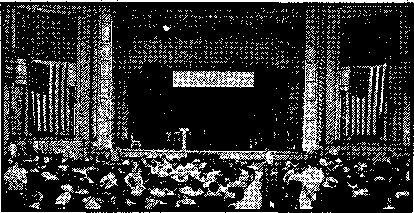
Tampa auditorium
pledge themselves to that. Some of them said they were against violence, but could not state what actions some individual members might take. The mayor then took down the names of all present. After they had all left the mayor showed the lawyer for Jehovah’s witnesses a very strong letter from the Knights of Columbus attacking them. ■
The mayor gave orders for police protec. tion, and while some persons showed up at the Auditorium who were evidently there for . no good reason, they did nothing. The mayor informed the witnesses that in addition to the ' police on duty at the Auditorium he was hold, ing a detail in readiness at police headquarters, and had also ordered the fire chief to have a fire hose ready. The conventioners enjoyed a peaceful time during the entire five days; nor was there any interference with the workers as they engaged in field service.
Telegrams sent by the Tampa Convention to the Detroit key convention finish this ac-
count: (1) “Reception [of programs] perfect Wednesday and Thursday. Vigorous opposi-
notified so that they could prepare to hear t . .. . _ and to advertise, that others could hear, too.
tion failed.” (2) “Thrilled by new book!” (3) Cost of travel between ‘ '
“In spite of many threats, no interference. Convention perfect success.”
Tulsa, Oklahoma
EARLY in April Jehovah’s witnesses received a very friendly two-page letter from the Chamber of Commerce of Tulsa, pointing out the advantages of holding a convention there, and suggesting (a) the Convention Hall, (b) the Fair Grounds, and (c) the Coliseum, then in the hands of receivers. Then the storm broke and manhood whs at a premium, with few candidates. The city fathers not only broke a contract for use of the Convention -Hall, but put the witnesses out of the City Hall, where they had been good tenants for many years. Then the Fair Grounds refused the lease of their property for conven-. tion purposes and the receivers for the Coliseum preferred to lose the $600 they would have received rather than to permit persecuted Christians to assemble in the building they . control. Tit the early days of the west, and in the early days of Tulsa itself, there were . manly Americans in those parts. How have the mighty fallen!
Honolulu, Hawaii
INFORMATION that the public address by Judge Rutherford, to be delivered at the Theocratic Convention, July 28, would be sent
&
' %" ’
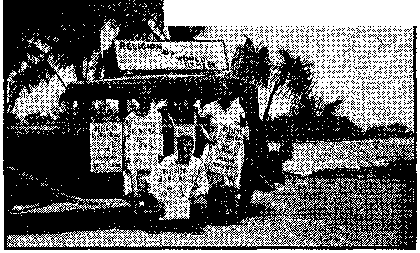
Hawaiian information marchers
to Honolulu by shortwave and land lines was enthusiastically received. Immediately preparations were begun, painting tire signs, and large signs 4 feet by 9 feet, advertising “Religion as a World Remedy”.
Those of good will in other islands were
the islands being pro-
* i«* * ’
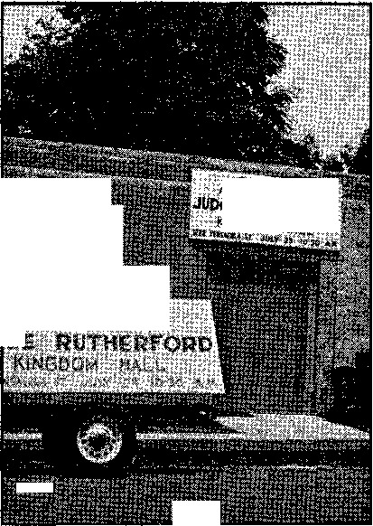
Hawaii. Publicity by truck
RELIGION AS A WORLD REMEDY
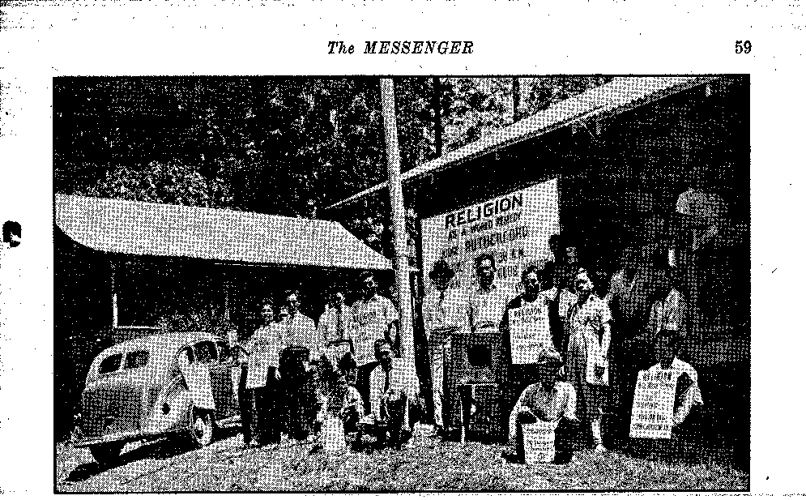
Hawaiian Kingdom publishers advertising “Religion as a World Remedy”
hibitive, those of good will prepared to assemble on the other islands at these places: Hilo,Hawaii; Pahala,Hawaii; Wailuku,Maui; Kapaa, Kauai; Makaweli, Kauai. The address being delivered by radio beam to Honolulu, it could be picked up by shortwave at these other places. Publishers ill' Samoa also were notified, so that they ttiight endeavor to listen in.
A total of 37,250 printed invitations were distributed from house to house, in stores, offices, government buildings, and at the entrance of large canneries. Large signs, tire signs, autos and trailers with large signs and sound effects were used to notify of the important occasion. A very thorough advertising job was done. The brethren worked early and late and thoroughly enjoyed the privilege, despite the heat. The youngest participant in the information marches was 6, and the eldest well over 70. These marches were held in the business sections of Honolulu, Hilo and Wailuku, and in the more thickly populated residential sections, to good advantage. '
Time of the address was most favorable, 10:30 a.m. Sunday, Honolulu time. All were joined in hoping for clear weather, since static would greatly interfere with good reception. In addition to the loud-speaker in the hall, two others were used outside. Kingdom Hall filled up and. the brethren were glad to give up their seats so that others could have them. A little after 10 a.m. the music from the convention auditorium at Detroit came through, and from, then until time of closing (12:10 noon) there was not the slightest break or interference at the Honolulu end.
Those assembled requested a message be sent Judge Rutherford at Detroit, and this was done.1 The few words it was possible .to send were not at all adequate to express how we all felt, and our thankfulness that the timely message of The Theocratic Government had been sent down here for our benefit.
A reporter from the Honolulu morning newspaper, TAe AduerHser, was present, and the write-up published on,the front page is attached. He expressed his enjoyment of Judge Rutherford’s address, and stated he intended to attend further meetings. The newspaper is much opposed and we were much surprised at their publishing anything at all.
All publishers in the Islands feel we,should take the fullest advantage of the comparative peace that now exists here, and push on hard-
er than ever serving The Theocracy, and, by the grace of Jehovah, that we will do, daily remembering those the Lord has placed in charge of His work in the earth, and our brethren in all lands, particularly those faith. - fully giving testimony while undergoing much . ’ opposition and persecution.
Kingston, Jamaica
THIS city, though not hooked up with De, troit by radio or by direct wire, insists that in its convention of July 27-28 it had direct connection with the spirit of the event at Detroit. At the public meeting the lecture “Government and Peace”, given by Judge Rutherford in 1939 at Madison Square Garden, was reproduced by phonograph. The release of Religion was a great surprise; only three persons in the island knew of the existence .

Group of conventioners at Shanghai, China
of the book prior to its presentation to the convention. ternational settlement of this great seaport of
the Orient, on Chang Ping road, a two-day convention was held coinciding with the last
. , ... . ; , ■ . ■ ... . ? ... . , . ... ; — . ------ ---r--O ■ _ > ” ‘ •
EVERY effort was made to take the Detroit two days of the American assembly, July 27 lectures to Australia by land wires and and 28, showing the absolute unanimity of ” ... ’ - ■ . Jehovah’s faithful people in the Orient with
radio communication, but up to the last minute it was impossible; however, the Australian brethren went right ahead with the convention previously arranged at Sydney, July 24-28. The new book, Religion, arrived in Australia on time for the convention, and 30,000 copies were taken away by the conventioners. Conventioners well supplied with Religion went to all parts of the country and, beginning August 1, joined in world-wide distribution during the “Religion’s Doom” Testimony Period.
Cables from Switzerland
A CABLE came through to the Detroit convention from Berne, Switzerland, reading as follows: ‘Wishing richest blessings from the great Theocrat. Since yesterday, Wednesday, we are experiencing Psalm 44:16-18 and Jeremiah .30: 16,17.”
A cable from Var-menaced Basel said: “Gruss [Greeting] Psalm 37:4; 20:2. In diesen denkwuerdigenTagen der Theokratie mil Euch verbunden, gruessen mit [In these noteworthy days of The Theocracy, united with you, we greet with] 1 Samuel 12: 22 ; Psalm 89:15,16; Psalm 133; Ezekiel 3: 811; 1 Chronicles 17:20. Gruss [Greeting] Psalm72:19; Philippians4:21. GruppeBasel, Schweiz [Basel, Switzerland, group].”
Shanghai, China
<07'AST is east, and west is' west, and Tj never the twain shall meet” does not apply to the Theocratic convention. In the in-those in the Occident. The fervent spirit of the convention was not at. all eclipsed by the heat of Shanghai summer, and many responded to the call for field service, some for the first time.
In the closing session the convention listened to the same public speaker as their American brethren, but by electrical transcription of Judge Rutherford’s speech on “Victory”, delivered at the New York convention last year. A resolution was unanimously adopted, as follows:
“Resolved that we, the Shanghai company of Jehovah’s witnesses, in convention assembled, do hereby reaffirm our determination to faithfully and joyfully heed the commandment To offer the sacrifice of praise, even the fruit of our lips, giving thanks unto his name’.
“We appreciate the times in which we live and the utter need of giving the closest -attention to the instructions of The Theocratic Government as announced to us through His visible organization.
“Through the columns of The Watchtower a vivid picture is given to us of the hideous monstrosity that has lifted up the head to destroy ‘Thy hidden ones’ and to hurl defiance against Jehovah and The Theocracy. We are resolved, by His grace and in His strength,
fully united with opr brethren throughout the earth, to uncover this ugly makeshift of the Devil. We know the way is dangerous, but we enjoy the fight; for we are mindful of this unshakable truth that ‘they shall fight against thee, but they shall not prevail against thee; for I am with thee, sai^h the Lord, to deliver thee’. "
“And finally, to our dear Brother Rutherford and his faithful supporters at Brooklyn and throughout the earth we desire to convey our fervent greetings and warmest Christian love and to assure all of our keenest desire to co-operate with them in advancing the interests of The Theocracy.”
England
WAR and censorship made it impossible to tie in the British Isles directly with the Detroit assembly by means of transoceanic radio beam. But here too the hand of the great Theocrat was not shortened, and He provided that His witnesses and their companions throughout Britain shared in the great treat that came at the climax of the convention in America, and on the same day. Thus, regardless of thousands of miles of ocean span, those devoted to The Theocratic Government were equally favored of the Lord, without partiality. Certainly the vicious action of the enemy fails to break up the unity of action of Jehovah’s army of “locusts”. —Joel 2:7-11.
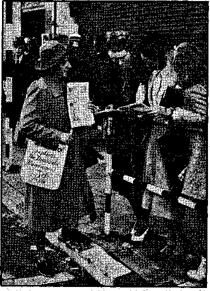
- - Magazine publishers in England carry on
Timing it with the convention program in America, every company in Britain called a special meeting for July 28, at 4 p. m. British time, corresponding to the hour when Judge Rutherford in Detroit should address the public on “Religion as a World Remedy”. All of Jehovah’s witnesses and persons of good will were encouraged to attend, and special invitation cards were sent out.
The procedure at each, company meeting was the same. After song and prayer for Jehovah’s blessing upon the Theocratic convention then in session world-wide, the company servants announced they had a pleasant surprise for the audience, to wit, that Jehovah’s people in the English-speaking world in convention assembled have the joy of receiving Religion. Then the new book itself was flashed before the delighted assembly, with announcement that supplies of the autograph edition were right then and there available. The response was instantaneous. The books were immediately placed. After distribution the meeting was brought to order and a. half-hour study of Religion followed, first the author’s letter to the “Theocratic ambassadors” being read and its high points stressed, and then all the beautiful pictures turned to and briefly explained according to the text, and also the first four pages of Chapter I read as an appetizer. In fine sequence to this came a half-hour study of the August issue of the Informant, just released and detailing the “Religion’s Doom” testimony period for August, during which the public edition of Religion would be distributed throughout the land. Supplies of this edition had already been consigned to all companies for this purpose.
Before closing this , joyous season the assemblies voted to send Judge Rutherford and the Detroit convention greetings and thanks for Religion. Five group cables were specially arranged for all the companies participating, one group cable for each of the following regions: Greater London, England, Wales, Scotland, and Ireland, the signatures of all companies in said regions being appended. The cable for England generally bore the names of 332 cities and towns, and read:
“Joyfully united in hearty greetings to you and Theocratic convention. English ‘locusts’ to a man thrilled and deeply grateful for new book Religion. Determined to complete our task warning people of good will. Multitude here growing rapidly. Standing for Theocracy. Loyal to Jehovah and Christ Jesus.” ,
From the company of Greater London itself and signed by all service units therein the cable read:
“London Theocratic ambassadors shout for joy receiving book" Religion. Eager to accommodate religionists by giving them more , ‘Religion’. Wjth you in disrobing old ‘harlot’. Two thousand London ‘locusts’ stand firm for Theocracy. Send greetings to all at first Theocratic convention.”
- The cable from Scotland, signed by all the principal companies there, said:
“Love and greetings to you and the Theocratic convention. Scottish brethren thrilled at prospect of sealing religion’s doom with new Weapon. Wholeheartedly with you in the fight.” •
From the Emerald Isle, and signed by all the principal Irish companies, the cable read: “Theocratic King’s ambassadors in Ireland overjoyed with new provision heralding doom of religion. Eager to tell ‘Razarus’ of Theocracy’s protection. Struggling as you against green monstrosity to victory. .Warm greetings to all in convention.”

Doorstep setup used
Publishers in England have Religion
The group of principal Welsh companies cabled:
“Warm greetings from ‘locust’ ambassadors in Wales. Religion received with gratitude and much enthusiasm. Keenly anticipate our share in distribution. With you heart and soul until victory for Theocracy.”
From Trowbridge and the London , office came cablegrams, the latter reading:
“British Tocusts’ send greetings to first Theocratic convention. Go after Hierarchy gangsters. With you. Ultimate victory for Theocracy.” •
(The receipt of these cablegrams was announced by Judge Rutherford himself on that platform that very same afternoon in his extemporaneous speech immediately following adoption of the Resolution at the public meeting.) . ,
The foregoing blessings operated to whip up the zeal and enthusiasm for a general convention in Britain, at Manchester, August 31 and September 1, arranged for with full faith ' in Jehovah despite regular bombing air raids over the Midlands of England and the threat of a German invasion any day. - Unable to serve them in person, Judge Rutherford made special arrangements to have, recordings of
,'■„ the full hour-and-forty-minutes’ proceedings at the Detroit public meeting inscribed on a ' set of light discs and air-mailed, at consider-■ able cost, to the London office. The Lord safe: ... guarded those records from destruction by
„ . Nazi air attack, and they reached destination ‘ safely Thursday. Next day, Friday evening, • \ the British extension of the Theocratic conven-
'■, tion actually got under way. The following exchange of cablegrams briefly tells the story.
Saturday morning, August 31, the London < Branch servant cabled from Manchester to ... Judge Rutherford at Brooklyn, New York: ' '"Manchester Theocratic convention had most •. enthusiastic opening Friday night. Records ' arrived safely Thursday. Everyone eagerly • . awaits public meeting Sunday to hear your . greatest speech. Ambassadors request love and greetings be sent you. Your letter August 17 brought tremendous applause.” .
Next day, Sunday, September 1, Judge Rutherford cabled this response for transmittal to the convention:
> "Theocratic conventioners, rejoice. Children of light, you are proclaiming the only hope for humanity. The King leads you. Help all ■ . of good will. Fascism and religion shall per-
■ • ish. ' Righteousness shall triumph. American
brethren love you.” ‘
Back comes a cable from Manchester that same day, time 8:42 p. m., advising Judge , , ; Rutherford as follows: ,
"Four thousand ambassadors assembled ; Manchester Theocratic convention send loving . ! , greetings. Unitedly adopt Resolution. Support you and American brethren in your fight < against Hierarchy, [signed] Watch Tower Society.”
There in .bomb-scarred, besieged Britain, aS they listened' to the electrical transcription . of "Religion as a World Remedy”, those . four thousand conventioners could feel the. full force of Judge Rutherford’s significant statement, which was greeted with wild enthusiasm and applause: "England alone ■ . stands firm, battling against the religious’ totalitarian combifie and in her fight for the rights of a free people. .England has been ■■ '■ 7kind to Jehovah’s witnesses; and because of ' that kindness shown it may be expected that ; ? Almighty God will show some special favor / . to England in her hour of terrible distress.”
The safe delivery through mine-sown, submarine-infested waters of ample supplies of - the new book Religion and the holding of that Theocratic convention in Manchester were a marvelous part of that "special favor” from Jehovah God to "England in her hour of terrible distress”. The Lord’s "other sheep” in Britain will all benefit.
In a letter just received before The Messenger went to press, the British branch office reported—
"We had our greatest convention; 3,500 brethren attended, of which 1,000 were pio-> neers. Practically every pioneer in the country got there one way,or another. Enthusiasm ran high throughout the convention.
"At the public meeting with/Religion as a World Remedy’, we could only pack in 500 more and had an audience of 5,000. Many had to be turned away. The press and their photographers were in attendance.
"During the past week-end we had our heaviest air raids, with much destruction. At Manchester there were air raids each night. A large theater was struck 100 yards from the Free Trade Hall, where we had our sessions. The experience is like going through an American thunderstorm. However, the Lord gave complete protection to His people and everything went off according to schedule. It was indeed a miracle that we were privileged to hold such a large assembly in the heat of war.”
Sheep and Goats
Some interesting experiences were had by different publishers. A taxi driver, was seated in his taxi near the curb. An information marcher had passed several times without offering him an invitation to attend the Sunday meeting. But on passing this time she held out one to him, and upon seeing them he opened the glove compartment of his car, removed several of the same, and stated: "I give them to my passengers; could I have more of them?” The publisher replied that she was glad to do that; then had the pleasure of hearing' him say, "We are with you people. We know that you are being used as a target, but we keep our eyes open and know your purpose is good. The Fifth Column booklet is sure a scorcher.”
While out with, handbills advertising the Sunday lecture we came to a place where we had left a Judge Rutherford Uncovers Fifth Column booklet a few days before. "I have read the booklet you left,” the man said, "and I wish I had a dozen of them. I’ll bet a hundred people have read my copy.” He did receive his dozen copies in short order.
A publisher on a street corner with her
64 The MESSENGER .
magazine bag was approached by a young man platform helped to soothe their overwrought
who asked, “Have you any of that Theocratic literature? I go to the University and they are sure talking about you folks over there.” He obtained the latest Watchtower and Consolation and Judge Rutherford Uncovers Fifth Column. .
Just after the public address started, two men came into the auditorium at Seattle. They went into the rear of the gallery. One carried a box from which he removed a large American flag. They began to look around and one said, “I wonder where there is a loudspeaker.” They looked sullen for. a while, but with the words coming in from the public address and the wonderful spirit manifest all around them they began to thaw out. Finally when Judge Rutherford made a good point relative to the Roman Catholic Hierarchy one was heard to say to the other: “I know that Catholic outfit and I know that’s true.” Perhaps the nicely draped American flag on the nerves. Finally, when the address was over, they went out with a different look on their faces and were heard laughing and talking to each other as they went along. ,
When on the magazine work in Seattle, r man took a magazine and then came back an invited us to come to his restaurant and ge our meals. “And you can’t pay for them e ther,” he stated. . . ;
A publisher was warned by a police office on Boston Common that if he gave out anothf flyer he would be arrested. A well-dressi businessman immediately came up and t quested a flyer. Wade gave it to him. T| man then turned to the police officer. “J a. taxpayer here and you are my servant,” he said. “If you prevent the public from getting this information, I’ll report you to federal authorities.” With that he walked away and Wade continued, unmolested by , the police officer, to distribute flyers.
In Conclusion
A LL persons of good will, do you grasp •Jjx the vital significance of the foregoing report? Is it hot undeniable proof that the Kingdom long prayed for is here, that The Theocracy is in operation, of which the Theocratic convention in America was visible, tangible and concrete evidence? .
, Does it not further prove, to wit, that the judgment of America and all other nations is on; that the great multitude of sheep-like people of good will are fleeing this doomed worldly organization and becoming “companions” of Jehovah’s witnesses; and that the “goats” are openly identifying themselves and hardening themselves in their opposition to the •Theocratic G overnment and are filling up a criminal record of persecution and demoniacal violence such as to justify the great Jehovah and His Judge Christ Jesus in utterly destroying these “goats” at Armageddon?
Clearly, then, The Theocracy is The Issue, and the decisive^ showdown fight is now nearer than, ever! As to who shall win, there is no "question. Before those eventful days of July 24-28, a Fascist-minded American Legionnaire of Detroit cocksufely proposed a bet with one of Jehovah’s witnesses that there would be no Theocratic convention held in the United States. All the Devil’s religious organization were determined that there should be no such assembly, thereby to prove that Jehovah’s witnesses were liars.and not the earthly representatives of Almighty God. Contrariwise, as stated in the Watchtower announcement, Jehovah’s will was that there should be a Theocratic convention in America in 1940. Romans 3:4 says: “Let God be true, but every man a liar.” July 24-28, the scheduled events went through; Jehovah demonstrated His supremacy and all-might; the Devil and his religionists and patrioteers emerged as liars before the onlooking world. The Armageddon result cannot be otherwise, and shall not! Whereat, in the language of the 1940 year text, Jehovah’s witnesses sing more heartily than ever: “My heart shall rejoice in thy salvation.”
Your enjoyment of the above historical convention record will not be complete unless you read also the new book Religion and the new booklet Conspiracy Against Democracy, and, -better still, hear the faithful phonographic 4ST recordings of Judge Rutherford’s addresses on “The End” and “Religion”. Such will aid and strengthen you in making the wise decision during this most important crisis. CHOOSE THE THEOCRACY AND LIVE! .
Published by Watchtower Bible and Tract Society, Inc., 117 Adams St., Brooklyn, N. Y. ” '/ ' ’ Made in the United States of America
1
Radiogram: “Fearless message joyfully heard. Hall filled. Religion gratefully received.”